library(groundhog)
pkgs <- c("lmerTest", "ggeffects","r2glmm", "tidyverse","here", "sjPlot", "ggpubr", "wesanderson")
groundhog.day <- '2022-07-25'
groundhog.library(pkgs, groundhog.day)
here::i_am("Analysis/finalConfAnalyses.qmd")
plotDir <- "/Volumes/Research Project/Metacognition/Study 1/Plots/"finalAnalyses
Set-Up
Import Data
longDf <- as.data.frame( arrow::read_parquet(here("Data/confClean.parquet")) )Scaling
longDf$outConfNeigh.Z <- scale(longDf$outConfNeigh)
longDf$inConfNeigh.Z <- scale(longDf$inConfNeigh)
longDf$allSelfNeigh.Z <- scale(longDf$allSelfNeigh)
longDf$eval.Z <- scale(longDf$eval)
longDf$outDegree.Z <- scale(longDf$outDegree)
longDf$inDegree.Z <- scale(longDf$inDegree)
longDf$evalBSWV.Z <- scale(longDf$evalBSWV)
longDf$evalBSWV.Z <- scale(longDf$evalBSWV)
longDf$evalBS.Z <- scale(longDf$evalBS)
longDf$devMid.Z <- scale(longDf$devMid)
longDf$devTS.Z <- scale(longDf$devTS)
longDf$confidence.Z <- scale(longDf$confidence)
longDf$NFC.Z <- scale(longDf$NFC)
longDf$SE.Z <- scale(longDf$SE)
longDf$SCC.Z <- scale(longDf$SCC)
longDf$DS.Z <- scale(longDf$DS)
longDf$CESD.Z <- scale(longDf$CESD)
longDf$MAIA.Z <- scale(longDf$MAIA)Self-Uncertainty Modulates Trait Self-Certainty
m<-lmer(confidence.Z ~ COND + ( 1 | subID ) + ( COND | traits), data=longDf, control=lmerControl(optimizer="bobyqa",
optCtrl=list(maxfun=2e5)))boundary (singular) fit: see help('isSingular')r2beta(m) Effect Rsq upper.CL lower.CL
1 Model 0.018 0.022 0.015
3 CONDSU 0.015 0.019 0.013
2 CONDNI 0.000 0.001 0.000tab_model(m, collapse.ci = T, show.stat=T, show.r2 = T, show.se = T, string.pred = c("Fixed Effects"), string.est = "Coef.", string.se = "SE", string.stat = "t", digits = 3, emph.p = F, dv.labels = "Confidence", df.method = "satterthwaite",show.df=T)| Confidence | |||||
|---|---|---|---|---|---|
| Fixed Effects | Coef. | SE | t | p | df |
| (Intercept) | 0.097 (-0.045 – 0.238) |
0.072 | 1.347 | 0.179 | 241.998 |
| COND [NI] | -0.036 (-0.234 – 0.162) |
0.100 | -0.358 | 0.721 | 233.070 |
| COND [SU] | -0.248 (-0.444 – -0.052) |
0.099 | -2.498 | 0.013 | 233.741 |
| Random Effects | |||||
| σ2 | 0.58 | ||||
| τ00 traits | 0.03 | ||||
| τ00 subID | 0.39 | ||||
| τ11 traits.CONDNI | 0.00 | ||||
| τ11 traits.CONDSU | 0.00 | ||||
| ρ01 traits.CONDNI | -0.11 | ||||
| ρ01 traits.CONDSU | 0.04 | ||||
| N subID | 236 | ||||
| N traits | 296 | ||||
| Observations | 34512 | ||||
| Marginal R2 / Conditional R2 | 0.021 / NA | ||||
Plot
m<-lmer(confidence ~ COND + ( 1 | subID ) + ( 1 | traits), data=longDf)
ggpredict(m, c("COND")) %>% plot()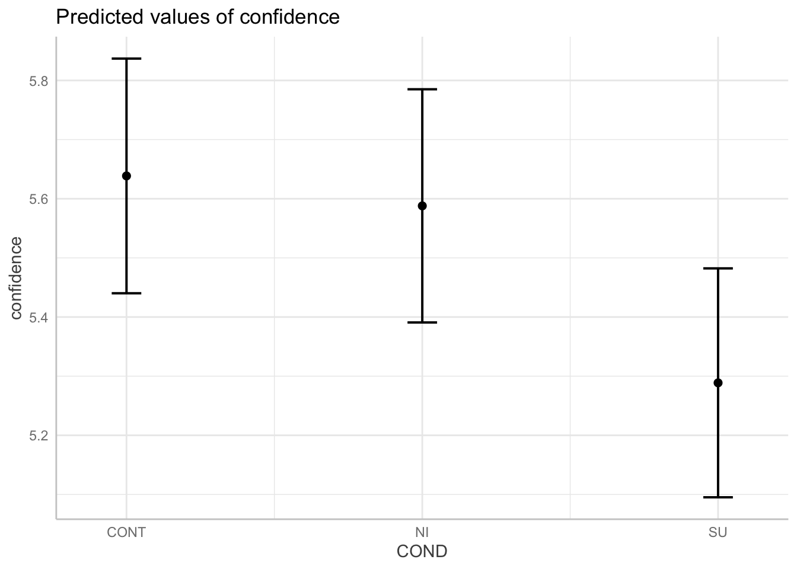
ggpredict(m, c("COND")) %>% plot(add.data=T) + labs(title="Raw Data",x="Condition",y="Change")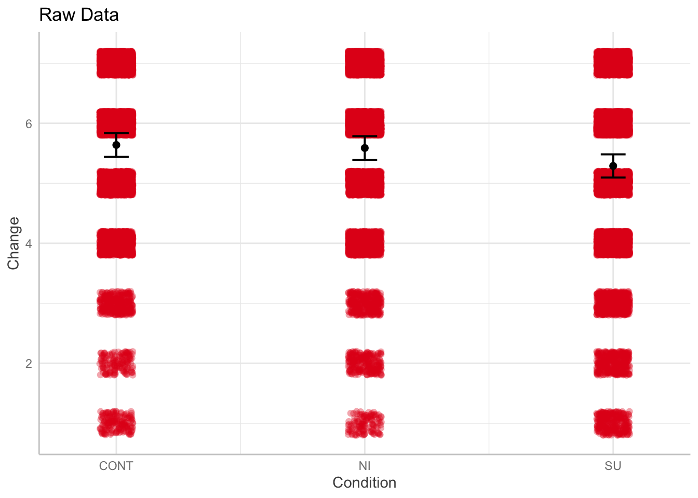
Traits with More Implications Are Evaluated More Confidently
m<-lmer(confidence.Z ~ inDegree.Z + outDegree.Z + valence + ( valence + outDegree.Z + inDegree.Z | subID ) + ( 1 | traits), data=longDf, control=lmerControl(optimizer="bobyqa",
optCtrl=list(maxfun=2e5)))boundary (singular) fit: see help('isSingular')r2beta(m) Effect Rsq upper.CL lower.CL
1 Model 0.010 0.013 0.008
3 outDegree.Z 0.005 0.007 0.004
4 valencepositive 0.005 0.007 0.003
2 inDegree.Z 0.000 0.000 0.000tab_model(m, collapse.ci = T, show.stat=T, show.r2 = T, show.se = T, string.pred = c("Fixed Effects"), string.est = "Coef.", string.se = "SE", string.stat = "t", digits = 3, emph.p = F, dv.labels = "Confidence", df.method = "satterthwaite",show.df=T)| Confidence | |||||
|---|---|---|---|---|---|
| Fixed Effects | Coef. | SE | t | p | df |
| (Intercept) | -0.057 (-0.153 – 0.040) |
0.049 | -1.155 | 0.249 | 269.094 |
| inDegree Z | -0.003 (-0.023 – 0.017) |
0.010 | -0.276 | 0.782 | 297.519 |
| outDegree Z | 0.061 (0.040 – 0.082) |
0.010 | 5.844 | <0.001 | 319.872 |
| valence [positive] | 0.115 (0.054 – 0.175) |
0.031 | 3.720 | <0.001 | 415.760 |
| Random Effects | |||||
| σ2 | 0.54 | ||||
| τ00 traits | 0.02 | ||||
| τ00 subID | 0.52 | ||||
| τ11 subID.valencepositive | 0.13 | ||||
| τ11 subID.outDegree.Z | 0.00 | ||||
| τ11 subID.inDegree.Z | 0.00 | ||||
| ρ01 subID.valencepositive | -0.61 | ||||
| ρ01 subID.outDegree.Z | -0.43 | ||||
| ρ01 subID.inDegree.Z | 0.13 | ||||
| N subID | 236 | ||||
| N traits | 296 | ||||
| Observations | 34512 | ||||
| Marginal R2 / Conditional R2 | 0.012 / NA | ||||
Self-Certainty Reflects Self-Consistency
m<-lmer(confidence.Z ~ allSelfNeigh.Z*eval.Z + ( allSelfNeigh.Z + eval.Z | subID ) + ( 1 | traits), data=longDf)
r2beta(m) Effect Rsq upper.CL lower.CL
1 Model 0.097 0.104 0.090
4 allSelfNeigh.Z:eval.Z 0.047 0.052 0.042
3 eval.Z 0.040 0.045 0.035
2 allSelfNeigh.Z 0.000 0.000 0.000tab_model(m, collapse.ci = T, show.stat=T, show.r2 = T, show.se = T, string.pred = c("Fixed Effects"), string.est = "Coef.", string.se = "SE", string.stat = "t", digits = 3, emph.p = F, dv.labels = "Confidence", df.method = "satterthwaite",show.df=T)| Confidence | |||||
|---|---|---|---|---|---|
| Fixed Effects | Coef. | SE | t | p | df |
| (Intercept) | -0.081 (-0.158 – -0.004) |
0.039 | -2.067 | 0.040 | 252.289 |
| allSelfNeigh Z | -0.005 (-0.021 – 0.011) |
0.008 | -0.640 | 0.522 | 354.520 |
| eval Z | 0.192 (0.150 – 0.235) |
0.022 | 8.929 | <0.001 | 237.752 |
| allSelfNeigh Z * eval Z | 0.167 (0.158 – 0.176) |
0.005 | 35.645 | <0.001 | 25238.519 |
| Random Effects | |||||
| σ2 | 0.44 | ||||
| τ00 traits | 0.01 | ||||
| τ00 subID | 0.35 | ||||
| τ11 subID.allSelfNeigh.Z | 0.00 | ||||
| τ11 subID.eval.Z | 0.10 | ||||
| ρ01 subID.allSelfNeigh.Z | 0.01 | ||||
| ρ01 subID.eval.Z | -0.62 | ||||
| ICC | 0.52 | ||||
| N subID | 236 | ||||
| N traits | 296 | ||||
| Observations | 34496 | ||||
| Marginal R2 / Conditional R2 | 0.065 / 0.548 | ||||
m<-lmer(confidence ~ allSelfNeigh*eval + ( allSelfNeigh + eval | subID ) + ( 1 | traits), data=longDf, control=lmerControl(optimizer="bobyqa",
optCtrl=list(maxfun=2e5)))Plot
p <- ggpredict(m, c("allSelfNeigh","eval[1,4,7]"))
ConsistencyConfidencePlot <-ggplot(p, aes(x, predicted)) + geom_line(aes(linetype=group, color=group)) + geom_ribbon(aes(ymin=conf.low, ymax=conf.high, fill=group), alpha=0.15) + scale_linetype_discrete(labels = c("Low","Medium","High")) + scale_color_manual(labels = c("Low","Medium","High"), values = wes_palette("Darjeeling1")) + scale_fill_manual(
labels=c("Low","Medium","High"), values = wes_palette("Darjeeling1")) + theme(
legend.position = c(.2, .7),
legend.justification = c("left", "bottom"),
legend.box.just = "left",
legend.margin = margin(6, 6, 6, 6)
) + theme(axis.text=element_text(size=12),
axis.title=element_text(size=12,face="bold")) + theme(legend.text = element_text(size=12)) + theme(panel.border = element_rect(colour = "black", fill = NA, size =1)) + theme(legend.title = element_blank()) + theme(panel.grid.major = element_blank(), panel.grid.minor = element_blank(),
panel.background = element_blank(), axis.line = element_line(colour = "black")) +
xlab("Neighboring Self-Evaluations") + ylab("Confidence")
ConsistencyConfidencePlot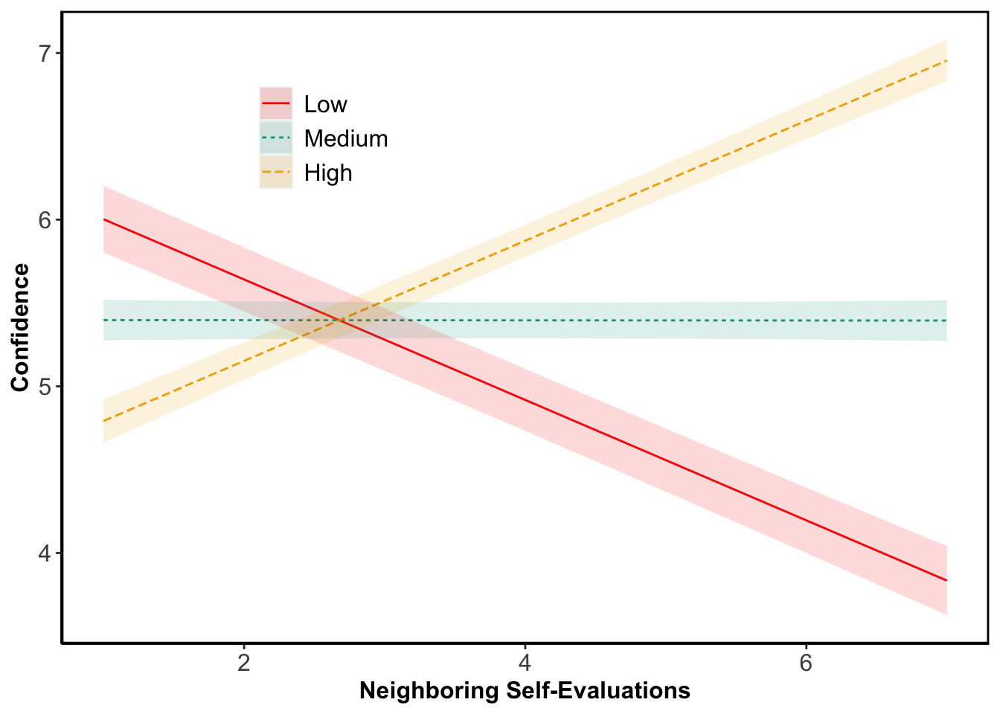
ggsave(paste0(plotDir,"ConsistConf",".png"), width = 9, height = 6, dpi=500, units="in")
ggsave(paste0(plotDir,"ConsistConf",".tiff"), width = 9, height = 6, dpi=500, units="in")
ggpredict(m, c("allSelfNeigh","eval")) %>% plot(add.data=T) + labs(title="Raw Data",x="Neighboring Self-Evaluations",y="Confidence")
Greater Confidence Predicts More Extreme Self-Evaluations
Deviation from Midpoint
m<-lmer( devMid.Z ~ confidence.Z + ( confidence.Z | subID ) + ( 1 | traits), data=longDf, control=lmerControl(optimizer="bobyqa",
optCtrl=list(maxfun=2e5)))
summary(m)Linear mixed model fit by REML. t-tests use Satterthwaite's method [
lmerModLmerTest]
Formula: devMid.Z ~ confidence.Z + (confidence.Z | subID) + (1 | traits)
Data: longDf
Control: lmerControl(optimizer = "bobyqa", optCtrl = list(maxfun = 2e+05))
REML criterion at convergence: 86965.1
Scaled residuals:
Min 1Q Median 3Q Max
-3.5005 -0.6960 0.0281 0.7189 4.3999
Random effects:
Groups Name Variance Std.Dev. Corr
traits (Intercept) 0.04549 0.2133
subID (Intercept) 0.08539 0.2922
confidence.Z 0.09150 0.3025 0.07
Residual 0.68965 0.8304
Number of obs: 34497, groups: traits, 296; subID, 236
Fixed effects:
Estimate Std. Error df t value Pr(>|t|)
(Intercept) -0.06598 0.02362 377.35505 -2.793 0.00549 **
confidence.Z 0.46929 0.02123 231.59350 22.108 < 2e-16 ***
---
Signif. codes: 0 '***' 0.001 '**' 0.01 '*' 0.05 '.' 0.1 ' ' 1
Correlation of Fixed Effects:
(Intr)
confidenc.Z 0.027 r2beta(m) Effect Rsq upper.CL lower.CL
1 Model 0.269 0.278 0.26
2 confidence.Z 0.269 0.278 0.26tab_model(m, collapse.ci = T, show.stat=T, show.r2 = T, show.se = T, string.pred = c("Fixed Effects"), string.est = "Coef.", string.se = "SE", string.stat = "t", digits = 3, emph.p = F, dv.labels = "Deviation", df.method = "satterthwaite",show.df=T)| Deviation | |||||
|---|---|---|---|---|---|
| Fixed Effects | Coef. | SE | t | p | df |
| (Intercept) | -0.066 (-0.112 – -0.020) |
0.024 | -2.793 | 0.005 | 377.355 |
| confidence Z | 0.469 (0.427 – 0.511) |
0.021 | 22.108 | <0.001 | 231.594 |
| Random Effects | |||||
| σ2 | 0.69 | ||||
| τ00 traits | 0.05 | ||||
| τ00 subID | 0.09 | ||||
| τ11 subID.confidence.Z | 0.09 | ||||
| ρ01 subID | 0.07 | ||||
| ICC | 0.24 | ||||
| N subID | 236 | ||||
| N traits | 296 | ||||
| Observations | 34497 | ||||
| Marginal R2 / Conditional R2 | 0.194 / 0.391 | ||||
Self-Evaluations by Valence
m<-lmer( eval.Z ~ confidence.Z * valence + ( confidence.Z + valence | subID ) + ( 1 | traits), data=longDf, control=lmerControl(optimizer="bobyqa",
optCtrl=list(maxfun=2e5)))
r2beta(m) Effect Rsq upper.CL lower.CL
1 Model 0.306 0.315 0.297
3 valencepositive 0.253 0.262 0.244
4 confidence.Z:valencepositive 0.042 0.047 0.037
2 confidence.Z 0.000 0.001 0.000tab_model(m, collapse.ci = T, show.stat=T, show.r2 = T, show.se = T, string.pred = c("Fixed Effects"), string.est = "Coef.", string.se = "SE", string.stat = "t", digits = 3, emph.p = F, dv.labels = "Deviation", df.method = "satterthwaite",show.df=T)| Deviation | |||||
|---|---|---|---|---|---|
| Fixed Effects | Coef. | SE | t | p | df |
| (Intercept) | -0.364 (-0.437 – -0.290) |
0.038 | -9.664 | <0.001 | 500.816 |
| confidence Z | 0.012 (-0.018 – 0.042) |
0.015 | 0.782 | 0.435 | 307.796 |
| valence [positive] | 0.801 (0.705 – 0.897) |
0.049 | 16.404 | <0.001 | 495.930 |
| confidence Z * valence [positive] |
0.289 (0.269 – 0.309) |
0.010 | 27.873 | <0.001 | 27978.414 |
| Random Effects | |||||
| σ2 | 0.51 | ||||
| τ00 traits | 0.11 | ||||
| τ00 subID | 0.15 | ||||
| τ11 subID.confidence.Z | 0.04 | ||||
| τ11 subID.valencepositive | 0.21 | ||||
| ρ01 subID.confidence.Z | 0.49 | ||||
| ρ01 subID.valencepositive | -0.74 | ||||
| ICC | 0.35 | ||||
| N subID | 236 | ||||
| N traits | 296 | ||||
| Observations | 34497 | ||||
| Marginal R2 / Conditional R2 | 0.211 / 0.486 | ||||
m<-lmer( eval ~ confidence * valence + ( confidence + valence | subID ) + ( 1 | traits), data=longDf, control=lmerControl(optimizer="bobyqa",
optCtrl=list(maxfun=2e5)))
p <- ggpredict(m, c("confidence","valence"))
ValenceDeviatePlot <-ggplot(p, aes(x, predicted)) + geom_line(aes(linetype=group, color=group)) + geom_ribbon(aes(ymin=conf.low, ymax=conf.high, fill=group), alpha=0.15) + scale_linetype_discrete(labels = c("Negative","Positive")) + scale_color_manual(labels = c("Negative","Positive"), values = wes_palette("Darjeeling1")) + scale_fill_manual(
labels=c("Negative","Positive"), values = wes_palette("Darjeeling1")) + theme(
legend.position = c(.2, .7),
legend.justification = c("left", "bottom"),
legend.box.just = "left",
legend.margin = margin(6, 6, 6, 6)
) + theme(axis.text=element_text(size=12),
axis.title=element_text(size=12,face="bold")) + theme(legend.text = element_text(size=12)) + theme(panel.border = element_rect(colour = "black", fill = NA, size =1)) + theme(legend.title = element_blank()) + theme(panel.grid.major = element_blank(), panel.grid.minor = element_blank(),
panel.background = element_blank(), axis.line = element_line(colour = "black")) +
xlab("Confidence") + ylab("SelfEvaluation") + scale_y_continuous(breaks=seq(1,7,1))
ValenceDeviatePlot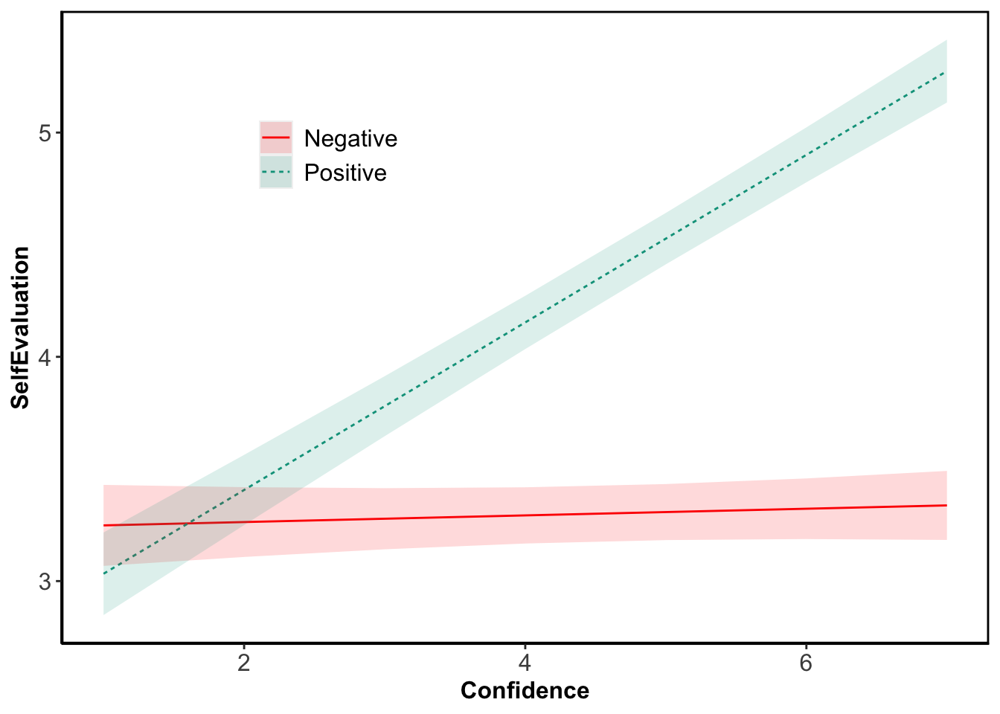
Deviation from Composite of Average Evaluation Per Trait and Per Subject
m<-lmer(devTS.Z ~ confidence.Z + ( confidence.Z | subID ) + ( 1 | traits), data=longDf, control=lmerControl(optimizer="bobyqa",
optCtrl=list(maxfun=2e5)))
summary(m)Linear mixed model fit by REML. t-tests use Satterthwaite's method [
lmerModLmerTest]
Formula: devTS.Z ~ confidence.Z + (confidence.Z | subID) + (1 | traits)
Data: longDf
Control: lmerControl(optimizer = "bobyqa", optCtrl = list(maxfun = 2e+05))
REML criterion at convergence: 92226.9
Scaled residuals:
Min 1Q Median 3Q Max
-2.8961 -0.7173 -0.1102 0.6093 4.7691
Random effects:
Groups Name Variance Std.Dev. Corr
traits (Intercept) 0.03653 0.1911
subID (Intercept) 0.08086 0.2844
confidence.Z 0.04271 0.2067 0.20
Residual 0.81081 0.9004
Number of obs: 34497, groups: traits, 296; subID, 236
Fixed effects:
Estimate Std. Error df t value Pr(>|t|)
(Intercept) -0.02504 0.02254 364.23761 -1.111 0.267
confidence.Z 0.29640 0.01559 224.13131 19.013 <2e-16 ***
---
Signif. codes: 0 '***' 0.001 '**' 0.01 '*' 0.05 '.' 0.1 ' ' 1
Correlation of Fixed Effects:
(Intr)
confidenc.Z 0.108 r2beta(m) Effect Rsq upper.CL lower.CL
1 Model 0.119 0.127 0.112
2 confidence.Z 0.119 0.127 0.112tab_model(m, collapse.ci = T, show.stat=T, show.r2 = T, show.se = T, string.pred = c("Fixed Effects"), string.est = "Coef.", string.se = "SE", string.stat = "t", digits = 3, emph.p = F, dv.labels = "Deviation", df.method = "satterthwaite",show.df=T)| Deviation | |||||
|---|---|---|---|---|---|
| Fixed Effects | Coef. | SE | t | p | df |
| (Intercept) | -0.025 (-0.069 – 0.019) |
0.023 | -1.111 | 0.267 | 364.238 |
| confidence Z | 0.296 (0.266 – 0.327) |
0.016 | 19.013 | <0.001 | 224.131 |
| Random Effects | |||||
| σ2 | 0.81 | ||||
| τ00 traits | 0.04 | ||||
| τ00 subID | 0.08 | ||||
| τ11 subID.confidence.Z | 0.04 | ||||
| ρ01 subID | 0.20 | ||||
| ICC | 0.16 | ||||
| N subID | 236 | ||||
| N traits | 296 | ||||
| Observations | 34497 | ||||
| Marginal R2 / Conditional R2 | 0.083 / 0.234 | ||||
Controlling for Average Evaluation Per Trait and Per Subject
{m<-lmer(scale(eval) ~ scale(confidence) + scale(evalBSWV) + scale(evalBT) + ( scale(confidence) | subID ) + ( 1 | traits), data=longDf)} summary(m) r2glmm::r2beta(m)
tab_model(m, collapse.ci = T, show.stat=T, show.r2 = T, show.se = T, string.pred = c("Fixed Effects"), string.est = "Coef.", string.se = "SE", string.stat = "t", digits = 3, emph.p = F, dv.labels = "Evaluation", df.method = "satterthwaite",show.df=T)| Evaluation | |||||
|---|---|---|---|---|---|
| Fixed Effects | Coef. | SE | t | p | df |
| (Intercept) | -0.025 (-0.069 – 0.019) |
0.023 | -1.111 | 0.267 | 364.238 |
| confidence Z | 0.296 (0.266 – 0.327) |
0.016 | 19.013 | <0.001 | 224.131 |
| Random Effects | |||||
| σ2 | 0.81 | ||||
| τ00 traits | 0.04 | ||||
| τ00 subID | 0.08 | ||||
| τ11 subID.confidence.Z | 0.04 | ||||
| ρ01 subID | 0.20 | ||||
| ICC | 0.16 | ||||
| N subID | 236 | ||||
| N traits | 296 | ||||
| Observations | 34497 | ||||
| Marginal R2 / Conditional R2 | 0.083 / 0.234 | ||||
Individual Differences in Self-Certainty: Main Effects
Self-Concept Clarity
m<-lmer( confidence.Z ~ SCC.Z + ( 1 | subID ) + ( SCC.Z | traits), data=longDf, control=lmerControl(optimizer="bobyqa",
optCtrl=list(maxfun=2e5)))
r2beta(m) Effect Rsq upper.CL lower.CL
1 Model 0.013 0.016 0.01
2 SCC.Z 0.013 0.016 0.01tab_model(m, collapse.ci = T, show.stat=T, show.r2 = T, show.se = T, string.pred = c("Fixed Effects"), string.est = "Coef.", string.se = "SE", string.stat = "t", digits = 3, emph.p = F, dv.labels = "Evaluation", df.method = "satterthwaite",show.df=T)| Evaluation | |||||
|---|---|---|---|---|---|
| Fixed Effects | Coef. | SE | t | p | df |
| (Intercept) | -0.000 (-0.083 – 0.082) |
0.042 | -0.009 | 0.993 | 262.499 |
| SCC Z | 0.092 (0.011 – 0.172) |
0.041 | 2.239 | 0.026 | 235.470 |
| Random Effects | |||||
| σ2 | 0.57 | ||||
| τ00 traits | 0.03 | ||||
| τ00 subID | 0.39 | ||||
| τ11 traits.SCC.Z | 0.00 | ||||
| ρ01 traits | -0.13 | ||||
| ICC | 0.42 | ||||
| N subID | 236 | ||||
| N traits | 296 | ||||
| Observations | 34512 | ||||
| Marginal R2 / Conditional R2 | 0.008 / 0.427 | ||||
Need for Cognition
m<-lmer( confidence.Z ~ NFC.Z + ( 1 | subID ) + ( NFC.Z | traits), data=longDf, control=lmerControl(optimizer="bobyqa",
optCtrl=list(maxfun=2e5)))boundary (singular) fit: see help('isSingular')r2beta(m) Effect Rsq upper.CL lower.CL
1 Model 0.003 0.004 0.002
2 NFC.Z 0.003 0.004 0.002tab_model(m, collapse.ci = T, show.stat=T, show.r2 = T, show.se = T, string.pred = c("Fixed Effects"), string.est = "Coef.", string.se = "SE", string.stat = "t", digits = 3, emph.p = F, dv.labels = "Evaluation", df.method = "satterthwaite",show.df=T)| Evaluation | |||||
|---|---|---|---|---|---|
| Fixed Effects | Coef. | SE | t | p | df |
| (Intercept) | -0.004 (-0.088 – 0.080) |
0.043 | -0.090 | 0.928 | 258.568 |
| NFC Z | 0.043 (-0.038 – 0.125) |
0.041 | 1.049 | 0.295 | 231.046 |
| Random Effects | |||||
| σ2 | 0.58 | ||||
| τ00 traits | 0.03 | ||||
| τ00 subID | 0.40 | ||||
| τ11 traits.NFC.Z | 0.00 | ||||
| ρ01 traits | 1.00 | ||||
| N subID | 233 | ||||
| N traits | 296 | ||||
| Observations | 34069 | ||||
| Marginal R2 / Conditional R2 | 0.003 / NA | ||||
Self-Esteem
m<-lmer( confidence.Z ~ SE.Z + ( 1 | subID ) + ( SE.Z | traits), data=longDf, control=lmerControl(optimizer="bobyqa",
optCtrl=list(maxfun=2e5)))
r2beta(m) Effect Rsq upper.CL lower.CL
1 Model 0.014 0.018 0.011
2 SE.Z 0.014 0.018 0.011tab_model(m, collapse.ci = T, show.stat=T, show.r2 = T, show.se = T, string.pred = c("Fixed Effects"), string.est = "Coef.", string.se = "SE", string.stat = "t", digits = 3, emph.p = F, dv.labels = "Evaluation", df.method = "satterthwaite",show.df=T)| Evaluation | |||||
|---|---|---|---|---|---|
| Fixed Effects | Coef. | SE | t | p | df |
| (Intercept) | -0.002 (-0.086 – 0.081) |
0.042 | -0.055 | 0.956 | 260.111 |
| SE Z | 0.098 (0.017 – 0.179) |
0.041 | 2.378 | 0.018 | 233.358 |
| Random Effects | |||||
| σ2 | 0.57 | ||||
| τ00 traits | 0.03 | ||||
| τ00 subID | 0.39 | ||||
| τ11 traits.SE.Z | 0.00 | ||||
| ρ01 traits | -0.03 | ||||
| ICC | 0.42 | ||||
| N subID | 234 | ||||
| N traits | 296 | ||||
| Observations | 34220 | ||||
| Marginal R2 / Conditional R2 | 0.010 / 0.429 | ||||
Dialectical Self-Views
m<-lmer( confidence.Z ~ DS.Z + ( 1 | subID ) + ( DS.Z | traits), data=longDf, control=lmerControl(optimizer="bobyqa",
optCtrl=list(maxfun=2e5)))
r2beta(m) Effect Rsq upper.CL lower.CL
1 Model 0.009 0.011 0.007
2 DS.Z 0.009 0.011 0.007tab_model(m, collapse.ci = T, show.stat=T, show.r2 = T, show.se = T, string.pred = c("Fixed Effects"), string.est = "Coef.", string.se = "SE", string.stat = "t", digits = 3, emph.p = F, dv.labels = "Evaluation", df.method = "satterthwaite",show.df=T)| Evaluation | |||||
|---|---|---|---|---|---|
| Fixed Effects | Coef. | SE | t | p | df |
| (Intercept) | 0.003 (-0.081 – 0.086) |
0.042 | 0.069 | 0.945 | 260.051 |
| DS Z | -0.076 (-0.157 – 0.005) |
0.041 | -1.846 | 0.066 | 233.382 |
| Random Effects | |||||
| σ2 | 0.57 | ||||
| τ00 traits | 0.03 | ||||
| τ00 subID | 0.39 | ||||
| τ11 traits.DS.Z | 0.00 | ||||
| ρ01 traits | 0.04 | ||||
| ICC | 0.43 | ||||
| N subID | 234 | ||||
| N traits | 296 | ||||
| Observations | 34215 | ||||
| Marginal R2 / Conditional R2 | 0.006 / 0.429 | ||||
Interoceptive Awareness
m<-lmer( confidence.Z ~ MAIA.Z + ( 1 | subID ) + ( MAIA.Z | traits), data=longDf, control=lmerControl(optimizer="bobyqa",
optCtrl=list(maxfun=2e5)))
r2beta(m) Effect Rsq upper.CL lower.CL
1 Model 0.028 0.032 0.024
2 MAIA.Z 0.028 0.032 0.024tab_model(m, collapse.ci = T, show.stat=T, show.r2 = T, show.se = T, string.pred = c("Fixed Effects"), string.est = "Coef.", string.se = "SE", string.stat = "t", digits = 3, emph.p = F, dv.labels = "Evaluation", df.method = "satterthwaite",show.df=T)| Evaluation | |||||
|---|---|---|---|---|---|
| Fixed Effects | Coef. | SE | t | p | df |
| (Intercept) | -0.000 (-0.082 – 0.082) |
0.041 | -0.002 | 0.998 | 263.317 |
| MAIA Z | 0.137 (0.057 – 0.216) |
0.040 | 3.396 | 0.001 | 235.025 |
| Random Effects | |||||
| σ2 | 0.58 | ||||
| τ00 traits | 0.03 | ||||
| τ00 subID | 0.38 | ||||
| τ11 traits.MAIA.Z | 0.00 | ||||
| ρ01 traits | -0.17 | ||||
| ICC | 0.42 | ||||
| N subID | 236 | ||||
| N traits | 296 | ||||
| Observations | 34512 | ||||
| Marginal R2 / Conditional R2 | 0.019 / 0.426 | ||||
Depressive Symptoms
m<-lmer( confidence.Z ~ CESD.Z + ( 1 | subID ) + ( CESD.Z | traits), data=longDf, control=lmerControl(optimizer="bobyqa",
optCtrl=list(maxfun=2e5)))
r2beta(m) Effect Rsq upper.CL lower.CL
1 Model 0.001 0.003 0.001
2 CESD.Z 0.001 0.003 0.001tab_model(m, collapse.ci = T, show.stat=T, show.r2 = T, show.se = T, string.pred = c("Fixed Effects"), string.est = "Coef.", string.se = "SE", string.stat = "t", digits = 3, emph.p = F, dv.labels = "Evaluation", df.method = "satterthwaite",show.df=T)| Evaluation | |||||
|---|---|---|---|---|---|
| Fixed Effects | Coef. | SE | t | p | df |
| (Intercept) | -0.006 (-0.090 – 0.078) |
0.042 | -0.140 | 0.888 | 259.812 |
| CESD Z | -0.032 (-0.113 – 0.050) |
0.041 | -0.763 | 0.446 | 232.808 |
| Random Effects | |||||
| σ2 | 0.58 | ||||
| τ00 traits | 0.03 | ||||
| τ00 subID | 0.39 | ||||
| τ11 traits.CESD.Z | 0.00 | ||||
| ρ01 traits | -0.12 | ||||
| ICC | 0.42 | ||||
| N subID | 234 | ||||
| N traits | 296 | ||||
| Observations | 34217 | ||||
| Marginal R2 / Conditional R2 | 0.001 / 0.424 | ||||
Individual Differences in Self-Certainty as a Function of Outdegree
Self-Concept Clarity
m<-lmer( confidence.Z ~ SCC.Z*outDegree.Z + ( outDegree.Z | subID ) + ( SCC.Z | traits), data=longDf, control=lmerControl(optimizer="bobyqa",
optCtrl=list(maxfun=2e5)))
rb <- r2beta(m)
data.frame(rb$Effect,rb$Rsq) rb.Effect rb.Rsq
1 Model 0.0176990026
2 SCC.Z 0.0125579637
3 outDegree.Z 0.0049911976
4 SCC.Z:outDegree.Z 0.0001239061tab_model(m, collapse.ci = T, show.stat=T, show.r2 = T, show.se = T, string.pred = c("Fixed Effects"), string.est = "Coef.", string.se = "SE", string.stat = "t", digits = 3, emph.p = F, dv.labels = "Evaluation", df.method = "satterthwaite",show.df=T)| Evaluation | |||||
|---|---|---|---|---|---|
| Fixed Effects | Coef. | SE | t | p | df |
| (Intercept) | -0.000 (-0.083 – 0.082) |
0.042 | -0.012 | 0.991 | 259.492 |
| SCC Z | 0.091 (0.011 – 0.172) |
0.041 | 2.237 | 0.026 | 235.399 |
| outDegree Z | 0.057 (0.036 – 0.078) |
0.011 | 5.371 | <0.001 | 310.938 |
| SCC Z * outDegree Z | 0.009 (-0.001 – 0.019) |
0.005 | 1.699 | 0.091 | 199.872 |
| Random Effects | |||||
| σ2 | 0.57 | ||||
| τ00 traits | 0.03 | ||||
| τ00 subID | 0.39 | ||||
| τ11 traits.SCC.Z | 0.00 | ||||
| τ11 subID.outDegree.Z | 0.00 | ||||
| ρ01 traits | -0.23 | ||||
| ρ01 subID | -0.33 | ||||
| ICC | 0.42 | ||||
| N subID | 236 | ||||
| N traits | 296 | ||||
| Observations | 34512 | ||||
| Marginal R2 / Conditional R2 | 0.012 / 0.429 | ||||
Plot
m<-lmer( confidence ~ SCC*outDegree + ( outDegree | subID ) + ( SCC | traits), data=longDf, control=lmerControl(optimizer="bobyqa",
optCtrl=list(maxfun=2e5)))Warning in checkConv(attr(opt, "derivs"), opt$par, ctrl = control$checkConv, : Model is nearly unidentifiable: very large eigenvalue
- Rescale variables?p <- ggpredict(m, c("SCC","outDegree"))
SCC.outdeg.Conf.Plot <-ggplot(p, aes(x, predicted)) + geom_line(aes(linetype=group, color=group)) + geom_ribbon(aes(ymin=conf.low, ymax=conf.high, fill=group), alpha=0.15) + scale_linetype_discrete(labels = c("Low Outdegree","Medium Outdegree","High Outdegree")) + scale_color_manual(labels = c("Low Outdegree","Medium Outdegree","High Outdegree"), values = wes_palette("Darjeeling1")) + scale_fill_manual(
labels=c("Low Outdegree","Medium Outdegree","High Outdegree"), values = wes_palette("Darjeeling1")) + theme(
legend.position = c(.2, .7),
legend.justification = c("left", "bottom"),
legend.box.just = "left",
legend.margin = margin(6, 6, 6, 6)
) + theme(axis.text=element_text(size=12),
axis.title=element_text(size=12,face="bold")) + theme(legend.text = element_text(size=12)) + theme(panel.border = element_rect(colour = "black", fill = NA, size =1)) + theme(legend.title = element_blank()) + theme(panel.grid.major = element_blank(), panel.grid.minor = element_blank(),
panel.background = element_blank(), axis.line = element_line(colour = "black")) +
xlab("Self-Concept Clarity") + ylab("Confidence")
SCC.outdeg.Conf.Plot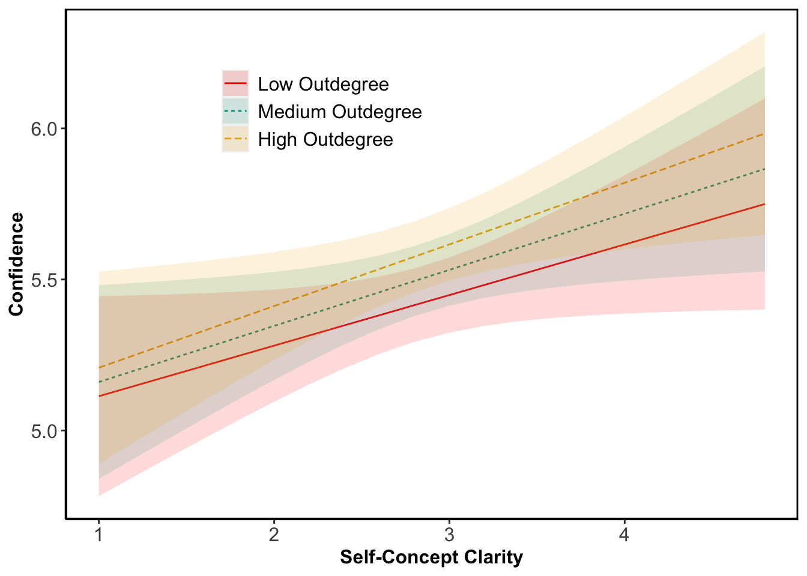
ggpredict(m, c("SCC","outDegree")) %>% plot(add.data=T) + labs(title="Raw Data",x="Self-Concept Clarity",y="Confidence")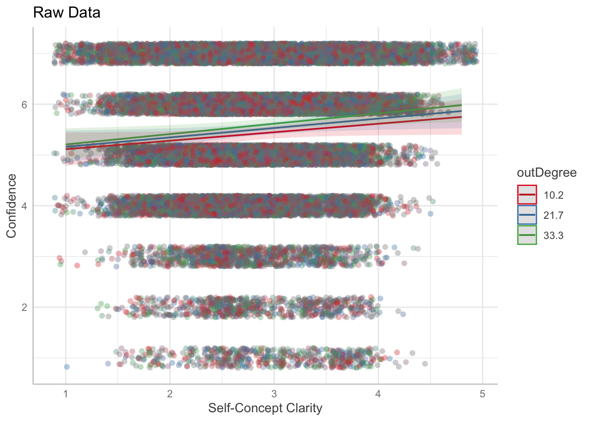
Need for Cognition
m<-lmer( confidence.Z ~ NFC.Z*outDegree.Z + ( outDegree.Z | subID ) + ( NFC.Z | traits), data=longDf, control=lmerControl(optimizer="bobyqa",
optCtrl=list(maxfun=2e5)))boundary (singular) fit: see help('isSingular')rb <- r2beta(m)
data.frame(rb$Effect,rb$Rsq) rb.Effect rb.Rsq
1 Model 0.0080124327
2 outDegree.Z 0.0050688725
3 NFC.Z 0.0028302428
4 NFC.Z:outDegree.Z 0.0001221301tab_model(m, collapse.ci = T, show.stat=T, show.r2 = T, show.se = T, string.pred = c("Fixed Effects"), string.est = "Coef.", string.se = "SE", string.stat = "t", digits = 3, emph.p = F, dv.labels = "Evaluation", df.method = "satterthwaite",show.df=T)| Evaluation | |||||
|---|---|---|---|---|---|
| Fixed Effects | Coef. | SE | t | p | df |
| (Intercept) | -0.004 (-0.088 – 0.080) |
0.043 | -0.093 | 0.926 | 255.641 |
| NFC Z | 0.043 (-0.038 – 0.125) |
0.041 | 1.046 | 0.296 | 231.020 |
| outDegree Z | 0.058 (0.037 – 0.079) |
0.011 | 5.396 | <0.001 | 310.428 |
| NFC Z * outDegree Z | 0.009 (-0.001 – 0.018) |
0.005 | 1.846 | 0.066 | 220.168 |
| Random Effects | |||||
| σ2 | 0.58 | ||||
| τ00 traits | 0.03 | ||||
| τ00 subID | 0.40 | ||||
| τ11 traits.NFC.Z | 0.00 | ||||
| τ11 subID.outDegree.Z | 0.00 | ||||
| ρ01 traits | 1.00 | ||||
| ρ01 subID | -0.32 | ||||
| N subID | 233 | ||||
| N traits | 296 | ||||
| Observations | 34069 | ||||
| Marginal R2 / Conditional R2 | 0.009 / NA | ||||
Plot
m<-lmer( confidence ~ NFC*outDegree + ( outDegree | subID ) + ( NFC | traits), data=longDf, control=lmerControl(optimizer="bobyqa",
optCtrl=list(maxfun=2e5)))boundary (singular) fit: see help('isSingular')p <- ggpredict(m, c("NFC","outDegree"))
NFC.outdeg.Conf.Plot <-ggplot(p, aes(x, predicted)) + geom_line(aes(linetype=group, color=group)) + geom_ribbon(aes(ymin=conf.low, ymax=conf.high, fill=group), alpha=0.15) + scale_linetype_discrete(labels = c("Low Outdegree","Medium Outdegree","High Outdegree")) + scale_color_manual(labels = c("Low Outdegree","Medium Outdegree","High Outdegree"), values = wes_palette("Darjeeling1")) + scale_fill_manual(
labels=c("Low Outdegree","Medium Outdegree","High Outdegree"), values = wes_palette("Darjeeling1")) + theme(
legend.position = c(.2, .7),
legend.justification = c("left", "bottom"),
legend.box.just = "left",
legend.margin = margin(6, 6, 6, 6)
) + theme(axis.text=element_text(size=12),
axis.title=element_text(size=12,face="bold")) + theme(legend.text = element_text(size=12)) + theme(panel.border = element_rect(colour = "black", fill = NA, size =1)) + theme(legend.title = element_blank()) + theme(panel.grid.major = element_blank(), panel.grid.minor = element_blank(),
panel.background = element_blank(), axis.line = element_line(colour = "black")) +
xlab("Need for Cognition") + ylab("Confidence")
NFC.outdeg.Conf.Plot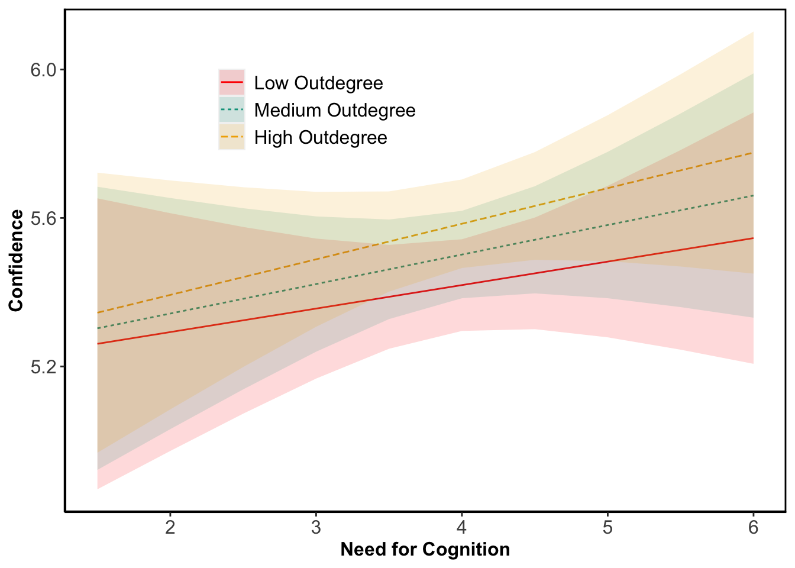
ggpredict(m, c("NFC","outDegree")) %>% plot(add.data=T) + labs(title="Raw Data",x="Need for Cognition",y="Confidence")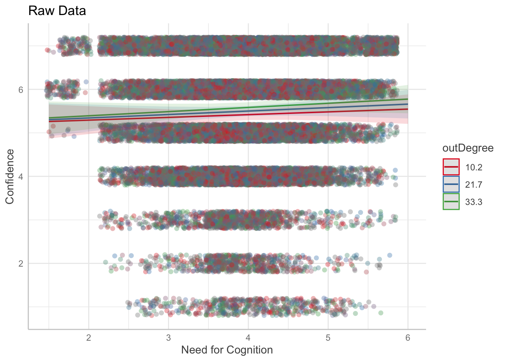
Self-Esteem
m<-lmer( confidence.Z ~ SE.Z*outDegree.Z + ( outDegree.Z | subID ) + ( SE.Z | traits), data=longDf, control=lmerControl(optimizer="bobyqa",
optCtrl=list(maxfun=2e5)))
rb <- r2beta(m)
data.frame(rb$Effect,rb$Rsq) rb.Effect rb.Rsq
1 Model 1.964172e-02
2 SE.Z 1.435068e-02
3 outDegree.Z 5.211827e-03
4 SE.Z:outDegree.Z 9.620607e-05tab_model(m, collapse.ci = T, show.stat=T, show.r2 = T, show.se = T, string.pred = c("Fixed Effects"), string.est = "Coef.", string.se = "SE", string.stat = "t", digits = 3, emph.p = F, dv.labels = "Evaluation", df.method = "satterthwaite",show.df=T)| Evaluation | |||||
|---|---|---|---|---|---|
| Fixed Effects | Coef. | SE | t | p | df |
| (Intercept) | -0.002 (-0.085 – 0.080) |
0.042 | -0.058 | 0.954 | 257.059 |
| SE Z | 0.098 (0.017 – 0.179) |
0.041 | 2.376 | 0.018 | 233.324 |
| outDegree Z | 0.059 (0.037 – 0.080) |
0.011 | 5.474 | <0.001 | 308.942 |
| SE Z * outDegree Z | 0.008 (-0.002 – 0.018) |
0.005 | 1.507 | 0.134 | 194.228 |
| Random Effects | |||||
| σ2 | 0.57 | ||||
| τ00 traits | 0.03 | ||||
| τ00 subID | 0.39 | ||||
| τ11 traits.SE.Z | 0.00 | ||||
| τ11 subID.outDegree.Z | 0.00 | ||||
| ρ01 traits | -0.11 | ||||
| ρ01 subID | -0.33 | ||||
| ICC | 0.42 | ||||
| N subID | 234 | ||||
| N traits | 296 | ||||
| Observations | 34220 | ||||
| Marginal R2 / Conditional R2 | 0.013 / 0.431 | ||||
Plot
m<-lmer( confidence ~ SE*outDegree + ( outDegree | subID ) + ( SE | traits), data=longDf, control=lmerControl(optimizer="bobyqa",
optCtrl=list(maxfun=2e5)))Warning in checkConv(attr(opt, "derivs"), opt$par, ctrl = control$checkConv, :
Model failed to converge with max|grad| = 0.00715132 (tol = 0.002, component 1)Warning in checkConv(attr(opt, "derivs"), opt$par, ctrl = control$checkConv, : Model is nearly unidentifiable: very large eigenvalue
- Rescale variables?p <- ggpredict(m, c("SE","outDegree"))
SE.outdeg.Conf.Plot <-ggplot(p, aes(x, predicted)) + geom_line(aes(linetype=group, color=group)) + geom_ribbon(aes(ymin=conf.low, ymax=conf.high, fill=group), alpha=0.15) + scale_linetype_discrete(labels = c("Low Outdegree","Medium Outdegree","High Outdegree")) + scale_color_manual(labels = c("Low Outdegree","Medium Outdegree","High Outdegree"), values = wes_palette("Darjeeling1")) + scale_fill_manual(
labels=c("Low Outdegree","Medium Outdegree","High Outdegree"), values = wes_palette("Darjeeling1")) + theme(
legend.position = c(.2, .7),
legend.justification = c("left", "bottom"),
legend.box.just = "left",
legend.margin = margin(6, 6, 6, 6)
) + theme(axis.text=element_text(size=12),
axis.title=element_text(size=12,face="bold")) + theme(legend.text = element_text(size=12)) + theme(panel.border = element_rect(colour = "black", fill = NA, size =1)) + theme(legend.title = element_blank()) + theme(panel.grid.major = element_blank(), panel.grid.minor = element_blank(),
panel.background = element_blank(), axis.line = element_line(colour = "black")) +
xlab("Need for Cognition") + ylab("Confidence")
SE.outdeg.Conf.Plot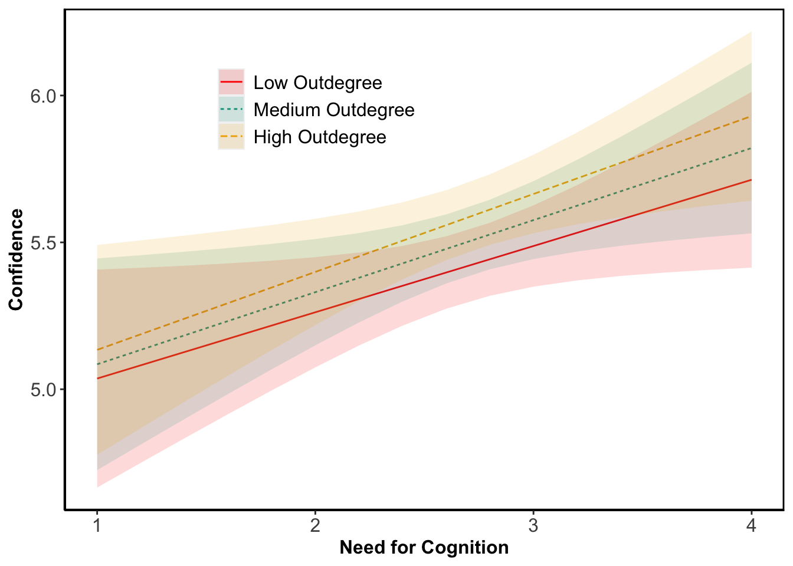
ggpredict(m, c("SE","outDegree")) %>% plot(add.data=T) + labs(title="Raw Data",x="Self-Esteem",y="Confidence")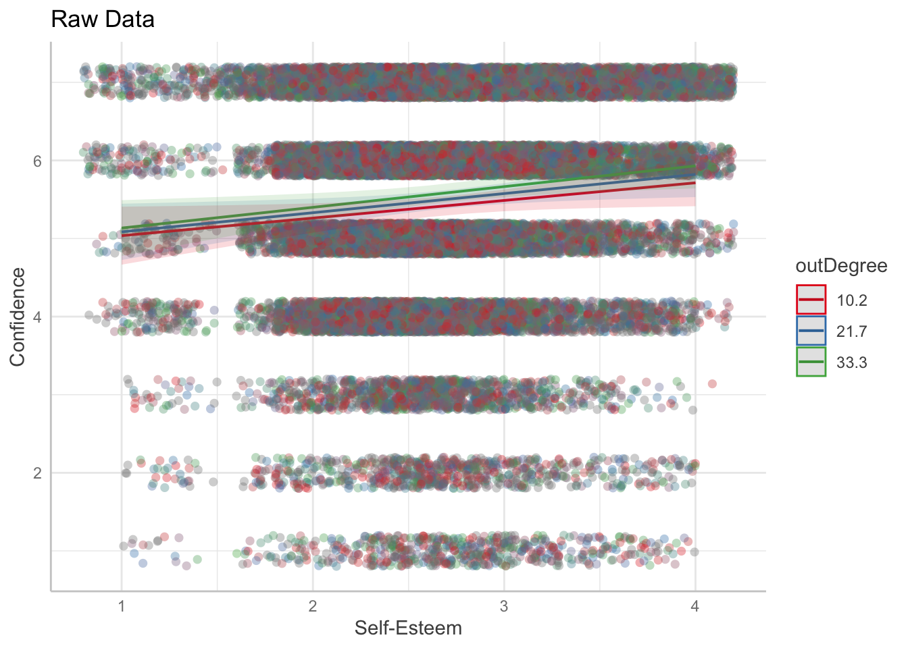
Dialectical Self-Views
m<-lmer( confidence.Z ~ DS.Z*outDegree.Z + ( outDegree.Z | subID ) + ( DS.Z | traits), data=longDf, control=lmerControl(optimizer="bobyqa",
optCtrl=list(maxfun=2e5)))
r2beta(m) Effect Rsq upper.CL lower.CL
1 Model 0.014 0.017 0.011
2 DS.Z 0.009 0.011 0.006
3 outDegree.Z 0.005 0.007 0.003
4 DS.Z:outDegree.Z 0.000 0.000 0.000tab_model(m, collapse.ci = T, show.stat=T, show.r2 = T, show.se = T, string.pred = c("Fixed Effects"), string.est = "Coef.", string.se = "SE", string.stat = "t", digits = 3, emph.p = F, dv.labels = "Evaluation", df.method = "satterthwaite",show.df=T)| Evaluation | |||||
|---|---|---|---|---|---|
| Fixed Effects | Coef. | SE | t | p | df |
| (Intercept) | 0.003 (-0.080 – 0.086) |
0.042 | 0.067 | 0.947 | 257.114 |
| DS Z | -0.076 (-0.157 – 0.005) |
0.041 | -1.842 | 0.067 | 233.382 |
| outDegree Z | 0.058 (0.036 – 0.079) |
0.011 | 5.341 | <0.001 | 312.694 |
| DS Z * outDegree Z | -0.006 (-0.017 – 0.004) |
0.005 | -1.134 | 0.258 | 201.960 |
| Random Effects | |||||
| σ2 | 0.57 | ||||
| τ00 traits | 0.03 | ||||
| τ00 subID | 0.39 | ||||
| τ11 traits.DS.Z | 0.00 | ||||
| τ11 subID.outDegree.Z | 0.00 | ||||
| ρ01 traits | 0.10 | ||||
| ρ01 subID | -0.31 | ||||
| ICC | 0.43 | ||||
| N subID | 234 | ||||
| N traits | 296 | ||||
| Observations | 34215 | ||||
| Marginal R2 / Conditional R2 | 0.009 / 0.431 | ||||
Plot
m<-lmer( confidence ~ DS*outDegree + ( outDegree | subID ) + ( DS | traits), data=longDf, control=lmerControl(optimizer="bobyqa",
optCtrl=list(maxfun=2e5)))Warning in checkConv(attr(opt, "derivs"), opt$par, ctrl = control$checkConv, : Model is nearly unidentifiable: very large eigenvalue
- Rescale variables?p <- ggpredict(m, c("DS","outDegree"))
DS.outdeg.Conf.Plot <-ggplot(p, aes(x, predicted)) + geom_line(aes(linetype=group, color=group)) + geom_ribbon(aes(ymin=conf.low, ymax=conf.high, fill=group), alpha=0.15) + scale_linetype_discrete(labels = c("Low Outdegree","Medium Outdegree","High Outdegree")) + scale_color_manual(labels = c("Low Outdegree","Medium Outdegree","High Outdegree"), values = wes_palette("Darjeeling1")) + scale_fill_manual(
labels=c("Low Outdegree","Medium Outdegree","High Outdegree"), values = wes_palette("Darjeeling1")) + theme(
legend.position = c(.2, .7),
legend.justification = c("left", "bottom"),
legend.box.just = "left",
legend.margin = margin(6, 6, 6, 6)
) + theme(axis.text=element_text(size=12),
axis.title=element_text(size=12,face="bold")) + theme(legend.text = element_text(size=12)) + theme(panel.border = element_rect(colour = "black", fill = NA, size =1)) + theme(legend.title = element_blank()) + theme(panel.grid.major = element_blank(), panel.grid.minor = element_blank(),
panel.background = element_blank(), axis.line = element_line(colour = "black")) +
xlab("Outdegree Centrality") + ylab("Confidence")
DS.outdeg.Conf.Plot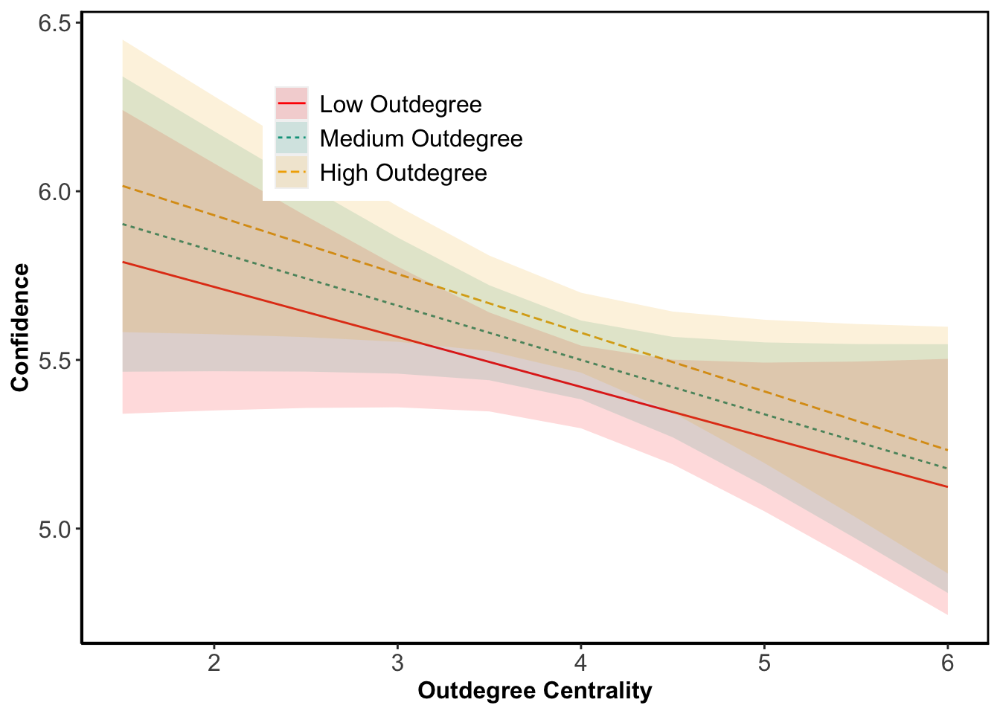
ggpredict(m, c("DS","outDegree")) %>% plot(add.data=T) + labs(title="Raw Data",x="Dialectical Self-Views",y="Confidence")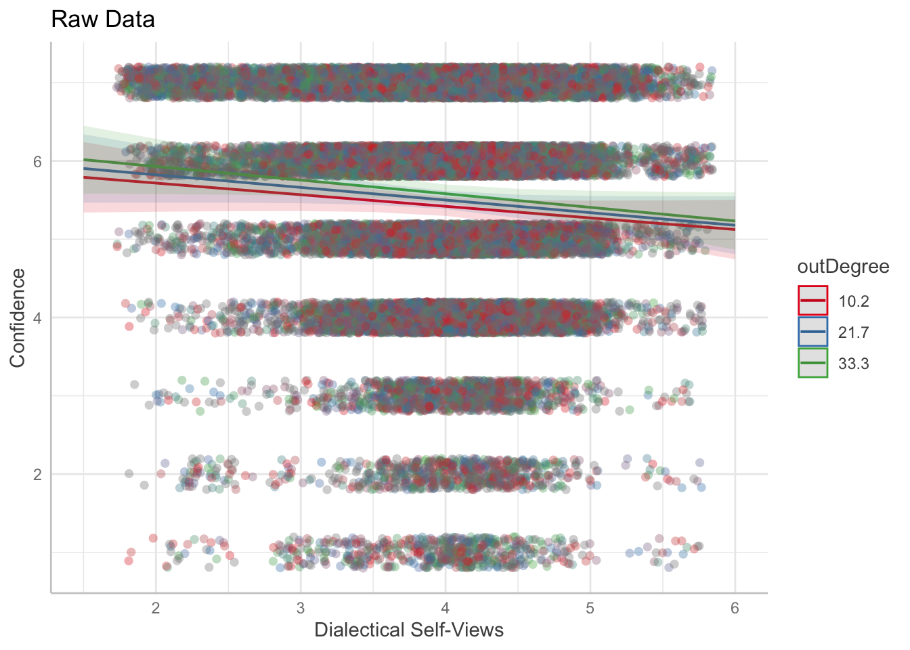
Interoceptive Awareness
m<-lmer( confidence.Z ~ MAIA.Z*outDegree.Z + ( outDegree.Z | subID ) + ( MAIA.Z | traits), data=longDf, control=lmerControl(optimizer="bobyqa",
optCtrl=list(maxfun=2e5)))
r2beta(m) Effect Rsq upper.CL lower.CL
1 Model 0.033 0.037 0.028
2 MAIA.Z 0.028 0.032 0.024
3 outDegree.Z 0.005 0.007 0.003
4 MAIA.Z:outDegree.Z 0.000 0.000 0.000tab_model(m, collapse.ci = T, show.stat=T, show.r2 = T, show.se = T, string.pred = c("Fixed Effects"), string.est = "Coef.", string.se = "SE", string.stat = "t", digits = 3, emph.p = F, dv.labels = "Evaluation", df.method = "satterthwaite",show.df=T)| Evaluation | |||||
|---|---|---|---|---|---|
| Fixed Effects | Coef. | SE | t | p | df |
| (Intercept) | -0.000 (-0.082 – 0.081) |
0.041 | -0.003 | 0.997 | 260.222 |
| MAIA Z | 0.137 (0.057 – 0.216) |
0.040 | 3.398 | 0.001 | 235.009 |
| outDegree Z | 0.058 (0.036 – 0.079) |
0.011 | 5.374 | <0.001 | 311.873 |
| MAIA Z * outDegree Z | 0.003 (-0.008 – 0.013) |
0.005 | 0.506 | 0.614 | 187.430 |
| Random Effects | |||||
| σ2 | 0.57 | ||||
| τ00 traits | 0.03 | ||||
| τ00 subID | 0.38 | ||||
| τ11 traits.MAIA.Z | 0.00 | ||||
| τ11 subID.outDegree.Z | 0.00 | ||||
| ρ01 traits | -0.21 | ||||
| ρ01 subID | -0.31 | ||||
| ICC | 0.42 | ||||
| N subID | 236 | ||||
| N traits | 296 | ||||
| Observations | 34512 | ||||
| Marginal R2 / Conditional R2 | 0.022 / 0.428 | ||||
Plot
m<-lmer( confidence ~ MAIA*outDegree + ( outDegree | subID ) + ( MAIA | traits), data=longDf, control=lmerControl(optimizer="bobyqa",
optCtrl=list(maxfun=2e5)))Warning in checkConv(attr(opt, "derivs"), opt$par, ctrl = control$checkConv, :
Model failed to converge with max|grad| = 0.0119347 (tol = 0.002, component 1)Warning in checkConv(attr(opt, "derivs"), opt$par, ctrl = control$checkConv, : Model is nearly unidentifiable: very large eigenvalue
- Rescale variables?p <- ggpredict(m, c("MAIA","outDegree"))
MAIA.outdeg.Conf.Plot <-ggplot(p, aes(x, predicted)) + geom_line(aes(linetype=group, color=group)) + geom_ribbon(aes(ymin=conf.low, ymax=conf.high, fill=group), alpha=0.15) + scale_linetype_discrete(labels = c("Low Outdegree","Medium Outdegree","High Outdegree")) + scale_color_manual(labels = c("Low Outdegree","Medium Outdegree","High Outdegree"), values = wes_palette("Darjeeling1")) + scale_fill_manual(
labels=c("Low Outdegree","Medium Outdegree","High Outdegree"), values = wes_palette("Darjeeling1")) + theme(
legend.position = c(.2, .7),
legend.justification = c("left", "bottom"),
legend.box.just = "left",
legend.margin = margin(6, 6, 6, 6)
) + theme(axis.text=element_text(size=12),
axis.title=element_text(size=12,face="bold")) + theme(legend.text = element_text(size=12)) + theme(panel.border = element_rect(colour = "black", fill = NA, size =1)) + theme(legend.title = element_blank()) + theme(panel.grid.major = element_blank(), panel.grid.minor = element_blank(),
panel.background = element_blank(), axis.line = element_line(colour = "black")) +
xlab("Outdegree Centrality") + ylab("Confidence")
MAIA.outdeg.Conf.Plot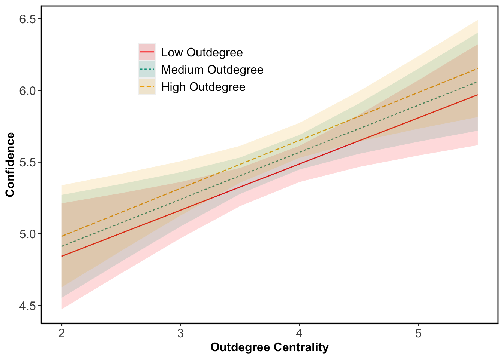
ggpredict(m, c("MAIA","outDegree")) %>% plot(add.data=T) + labs(title="Raw Data",x="Interoceptive Awareness",y="Confidence")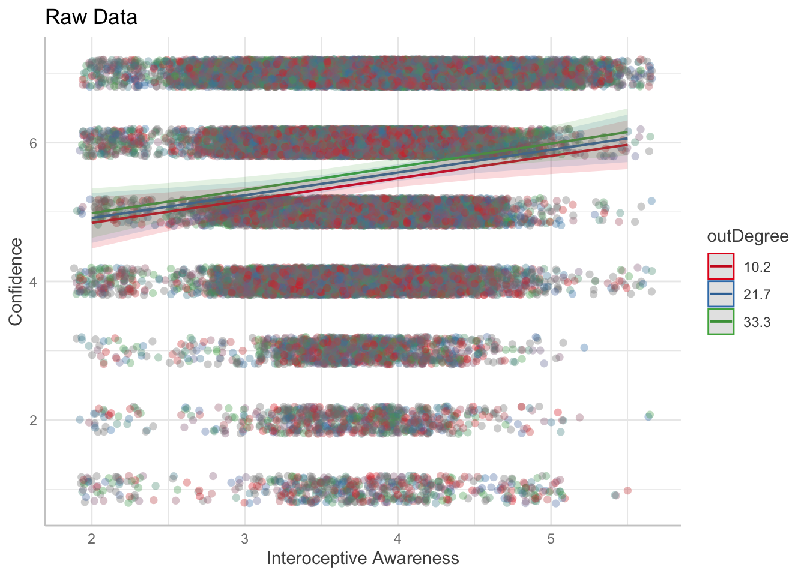
Depressive Symptoms
m<-lmer( confidence.Z ~ CESD.Z*outDegree.Z + ( outDegree.Z | subID ) + ( CESD.Z | traits), data=longDf, control=lmerControl(optimizer="bobyqa",
optCtrl=list(maxfun=2e5)))
r2beta(m) Effect Rsq upper.CL lower.CL
1 Model 0.007 0.009 0.005
3 outDegree.Z 0.005 0.007 0.003
2 CESD.Z 0.001 0.003 0.001
4 CESD.Z:outDegree.Z 0.000 0.001 0.000tab_model(m, collapse.ci = T, show.stat=T, show.r2 = T, show.se = T, string.pred = c("Fixed Effects"), string.est = "Coef.", string.se = "SE", string.stat = "t", digits = 3, emph.p = F, dv.labels = "Evaluation", df.method = "satterthwaite",show.df=T)| Evaluation | |||||
|---|---|---|---|---|---|
| Fixed Effects | Coef. | SE | t | p | df |
| (Intercept) | -0.006 (-0.090 – 0.077) |
0.042 | -0.144 | 0.886 | 256.865 |
| CESD Z | -0.031 (-0.113 – 0.050) |
0.041 | -0.761 | 0.447 | 232.742 |
| outDegree Z | 0.058 (0.037 – 0.079) |
0.011 | 5.392 | <0.001 | 310.358 |
| CESD Z * outDegree Z | -0.011 (-0.021 – -0.000) |
0.005 | -2.054 | 0.041 | 183.004 |
| Random Effects | |||||
| σ2 | 0.58 | ||||
| τ00 traits | 0.03 | ||||
| τ00 subID | 0.39 | ||||
| τ11 traits.CESD.Z | 0.00 | ||||
| τ11 subID.outDegree.Z | 0.00 | ||||
| ρ01 traits | 0.00 | ||||
| ρ01 subID | -0.31 | ||||
| ICC | 0.42 | ||||
| N subID | 234 | ||||
| N traits | 296 | ||||
| Observations | 34217 | ||||
| Marginal R2 / Conditional R2 | 0.004 / 0.426 | ||||
Plot
m<-lmer( confidence ~ CESD*outDegree + ( outDegree | subID ) + ( CESD | traits), data=longDf, control=lmerControl(optimizer="bobyqa",
optCtrl=list(maxfun=2e5)))Warning in checkConv(attr(opt, "derivs"), opt$par, ctrl = control$checkConv, :
Model failed to converge with max|grad| = 0.0166039 (tol = 0.002, component 1)Warning in checkConv(attr(opt, "derivs"), opt$par, ctrl = control$checkConv, : Model is nearly unidentifiable: very large eigenvalue
- Rescale variables?p <- ggpredict(m, c("CESD","outDegree"))
CESD.outdeg.Conf.Plot <-ggplot(p, aes(x, predicted)) + geom_line(aes(linetype=group, color=group)) + geom_ribbon(aes(ymin=conf.low, ymax=conf.high, fill=group), alpha=0.15) + scale_linetype_discrete(labels = c("Low Outdegree","Medium Outdegree","High Outdegree")) + scale_color_manual(labels = c("Low Outdegree","Medium Outdegree","High Outdegree"), values = wes_palette("Darjeeling1")) + scale_fill_manual(
labels=c("Low Outdegree","Medium Outdegree","High Outdegree"), values = wes_palette("Darjeeling1")) + theme(
legend.position = c(.2, .7),
legend.justification = c("left", "bottom"),
legend.box.just = "left",
legend.margin = margin(6, 6, 6, 6)
) + theme(axis.text=element_text(size=12),
axis.title=element_text(size=12,face="bold")) + theme(legend.text = element_text(size=12)) + theme(panel.border = element_rect(colour = "black", fill = NA, size =1)) + theme(legend.title = element_blank()) + theme(panel.grid.major = element_blank(), panel.grid.minor = element_blank(),
panel.background = element_blank(), axis.line = element_line(colour = "black")) +
xlab("Depressive Symptoms") + ylab("Confidence")
CESD.outdeg.Conf.Plot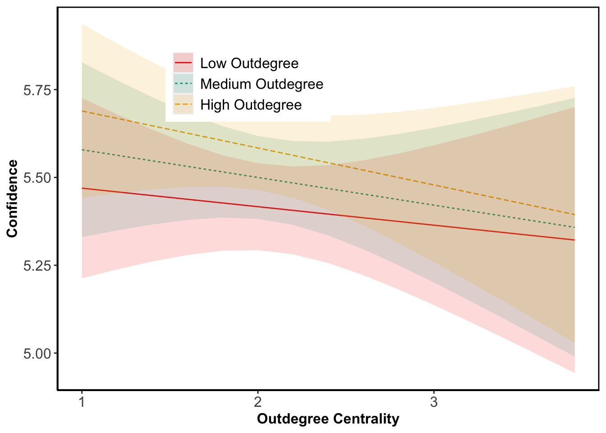
ggpredict(m, c("CESD","outDegree")) %>% plot(add.data=T) + labs(title="Raw Data",x="Depressive Symptoms",y="Confidence")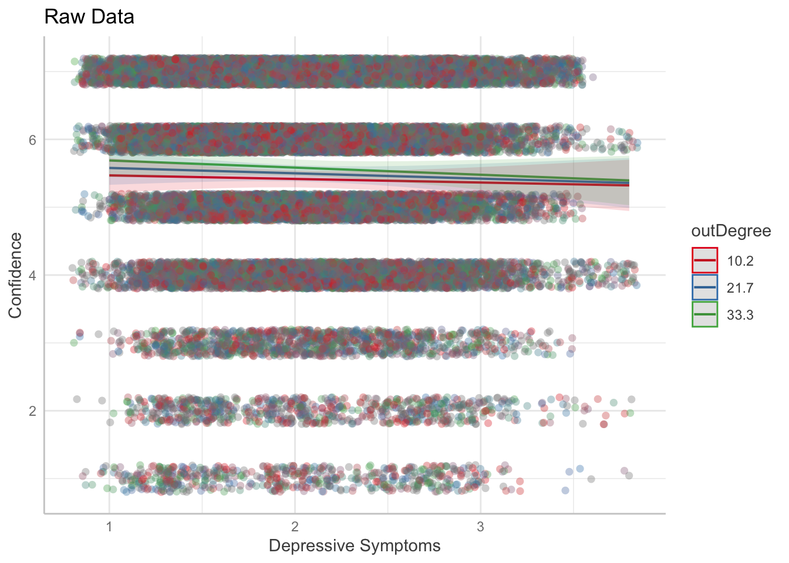
ggarrange(SCC.outdeg.Conf.Plot, NFC.outdeg.Conf.Plot, CESD.outdeg.Conf.Plot, nrow=1, common.legend = T)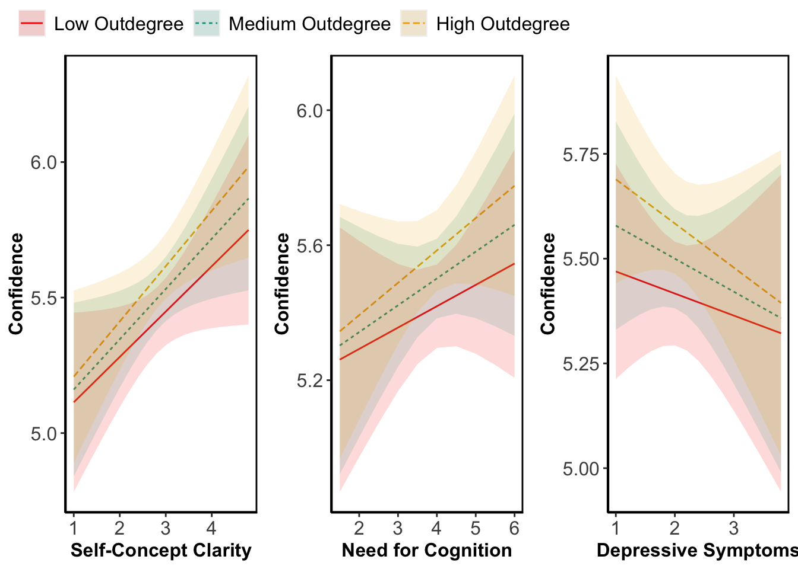
ggsave(paste0(plotDir,"IndDiff.outdegConf",".png"), width = 10.5, height = 6, units = "in")
ggsave(paste0(plotDir,"IndDiff.outdegConf",".tiff"), width = 10.5, height = 6, units = "in")Individual Differences in Self-Certainty as a Function of Valence
Self-Concept Clarity
m<-lmer( confidence.Z ~ SCC.Z*valence + ( valence | subID ) + ( SCC.Z | traits), data=longDf, control=lmerControl(optimizer="bobyqa",
optCtrl=list(maxfun=2e5)))
rb <- r2beta(m)
data.frame(rb$Effect,rb$Rsq) rb.Effect rb.Rsq
1 Model 0.018400383
2 valencepositive 0.004527729
3 SCC.Z 0.003140197
4 SCC.Z:valencepositive 0.001174888tab_model(m, collapse.ci = T, show.stat=T, show.r2 = T, show.se = T, string.pred = c("Fixed Effects"), string.est = "Coef.", string.se = "SE", string.stat = "t", digits = 3, emph.p = F, dv.labels = "Evaluation", df.method = "satterthwaite",show.df=T)| Evaluation | |||||
|---|---|---|---|---|---|
| Fixed Effects | Coef. | SE | t | p | df |
| (Intercept) | -0.054 (-0.150 – 0.043) |
0.049 | -1.094 | 0.275 | 272.858 |
| SCC Z | 0.064 (-0.029 – 0.157) |
0.047 | 1.358 | 0.176 | 235.096 |
| valence [positive] | 0.109 (0.047 – 0.170) |
0.031 | 3.481 | 0.001 | 432.168 |
| SCC Z * valence [positive] |
0.055 (0.006 – 0.104) |
0.025 | 2.227 | 0.027 | 239.705 |
| Random Effects | |||||
| σ2 | 0.54 | ||||
| τ00 traits | 0.03 | ||||
| τ00 subID | 0.52 | ||||
| τ11 traits.SCC.Z | 0.00 | ||||
| τ11 subID.valencepositive | 0.13 | ||||
| ρ01 traits | -0.54 | ||||
| ρ01 subID | -0.63 | ||||
| ICC | 0.45 | ||||
| N subID | 236 | ||||
| N traits | 296 | ||||
| Observations | 34512 | ||||
| Marginal R2 / Conditional R2 | 0.012 / 0.458 | ||||
Plot
m<-lmer( confidence ~ SCC*valence + ( valence | subID ) + ( SCC | traits), data=longDf, control=lmerControl(optimizer="bobyqa",
optCtrl=list(maxfun=2e5)))
p <- ggpredict(m, c("SCC","valence"))
SCC.valence.Conf.Plot <-ggplot(p, aes(x, predicted)) + geom_line(aes(linetype=group, color=group)) + geom_ribbon(aes(ymin=conf.low, ymax=conf.high, fill=group), alpha=0.15) + scale_linetype_discrete(labels = c("Negative", "Positive")) + scale_color_manual(labels = c("Negative", "Positive"), values = wes_palette("Darjeeling1")) + scale_fill_manual(
labels=c("Negative", "Positive"), values = wes_palette("Darjeeling1")) + theme(
legend.position = c(.2, .7),
legend.justification = c("left", "bottom"),
legend.box.just = "left",
legend.margin = margin(6, 6, 6, 6)
) + theme(axis.text=element_text(size=12),
axis.title=element_text(size=12,face="bold")) + theme(legend.text = element_text(size=12)) + theme(panel.border = element_rect(colour = "black", fill = NA, size =1)) + theme(legend.title = element_blank()) + theme(panel.grid.major = element_blank(), panel.grid.minor = element_blank(),
panel.background = element_blank(), axis.line = element_line(colour = "black")) +
xlab("Self-Concept Clarity") + ylab("Confidence")
SCC.valence.Conf.Plot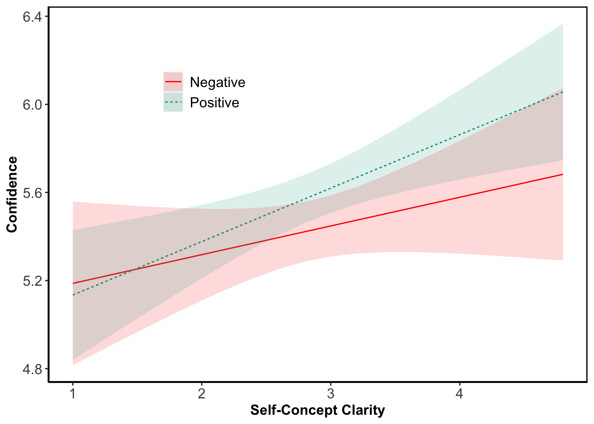
ggpredict(m, c("SCC","valence")) %>% plot(add.data=T) + labs(title="Raw Data",x="Self-Concept Clarity",y="Confidence")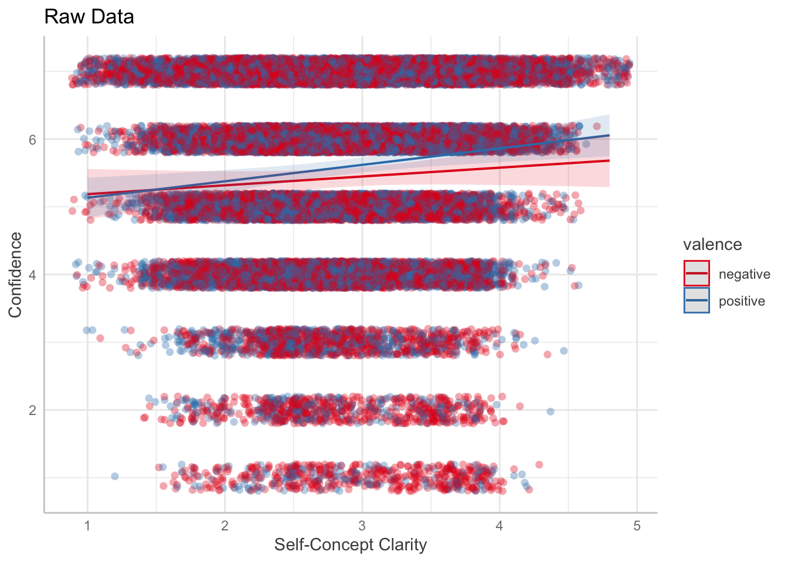
Need for Cognition
m<-lmer( confidence.Z ~ NFC.Z*valence + ( valence | subID ) + ( NFC.Z | traits), data=longDf, control=lmerControl(optimizer="bobyqa",
optCtrl=list(maxfun=2e5)))boundary (singular) fit: see help('isSingular')rb <- r2beta(m)
data.frame(rb$Effect,rb$Rsq) rb.Effect rb.Rsq
1 Model 0.0078669202
2 valencepositive 0.0046557854
3 NFC.Z 0.0005587740
4 NFC.Z:valencepositive 0.0003868185tab_model(m, collapse.ci = T, show.stat=T, show.r2 = T, show.se = T, string.pred = c("Fixed Effects"), string.est = "Coef.", string.se = "SE", string.stat = "t", digits = 3, emph.p = F, dv.labels = "Evaluation", df.method = "satterthwaite",show.df=T)| Evaluation | |||||
|---|---|---|---|---|---|
| Fixed Effects | Coef. | SE | t | p | df |
| (Intercept) | -0.058 (-0.156 – 0.040) |
0.050 | -1.171 | 0.243 | 268.786 |
| NFC Z | 0.027 (-0.067 – 0.121) |
0.048 | 0.569 | 0.570 | 231.054 |
| valence [positive] | 0.111 (0.048 – 0.173) |
0.032 | 3.494 | 0.001 | 425.458 |
| NFC Z * valence [positive] |
0.032 (-0.018 – 0.081) |
0.025 | 1.271 | 0.205 | 231.205 |
| Random Effects | |||||
| σ2 | 0.55 | ||||
| τ00 traits | 0.03 | ||||
| τ00 subID | 0.52 | ||||
| τ11 traits.NFC.Z | 0.00 | ||||
| τ11 subID.valencepositive | 0.13 | ||||
| ρ01 traits | 1.00 | ||||
| ρ01 subID | -0.62 | ||||
| N subID | 233 | ||||
| N traits | 296 | ||||
| Observations | 34069 | ||||
| Marginal R2 / Conditional R2 | 0.009 / NA | ||||
Plot
m<-lmer( confidence ~ NFC*valence + ( valence | subID ) + ( NFC | traits), data=longDf, control=lmerControl(optimizer="bobyqa",
optCtrl=list(maxfun=2e5)))boundary (singular) fit: see help('isSingular')p <- ggpredict(m, c("NFC","valence"))
NFC.valence.Conf.Plot <-ggplot(p, aes(x, predicted)) + geom_line(aes(linetype=group, color=group)) + geom_ribbon(aes(ymin=conf.low, ymax=conf.high, fill=group), alpha=0.15) + scale_linetype_discrete(labels = c("Negative", "Positive")) + scale_color_manual(labels = c("Negative", "Positive"), values = wes_palette("Darjeeling1")) + scale_fill_manual(
labels=c("Negative", "Positive"), values = wes_palette("Darjeeling1")) + theme(
legend.position = c(.2, .7),
legend.justification = c("left", "bottom"),
legend.box.just = "left",
legend.margin = margin(6, 6, 6, 6)
) + theme(axis.text=element_text(size=12),
axis.title=element_text(size=12,face="bold")) + theme(legend.text = element_text(size=12)) + theme(panel.border = element_rect(colour = "black", fill = NA, size =1)) + theme(legend.title = element_blank()) + theme(panel.grid.major = element_blank(), panel.grid.minor = element_blank(),
panel.background = element_blank(), axis.line = element_line(colour = "black")) +
xlab("Need for Cognition") + ylab("Confidence")
NFC.valence.Conf.Plot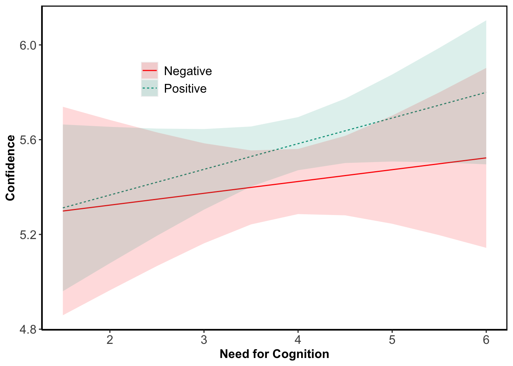
ggpredict(m, c("NFC","valence")) %>% plot(add.data=T) + labs(title="Raw Data",x="Need for Cognition",y="Confidence")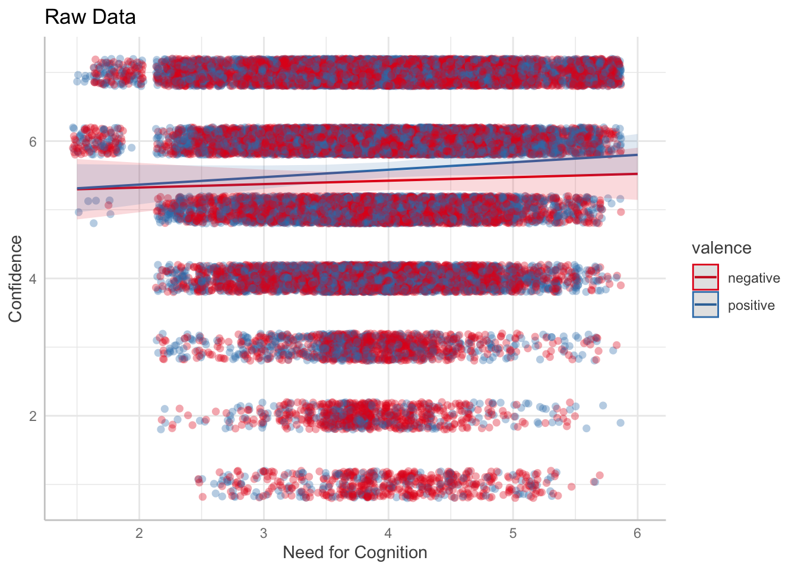
Self-Esteem
m<-lmer( confidence.Z ~ SE.Z*valence + ( valence | subID ) + ( SE.Z | traits), data=longDf, control=lmerControl(optimizer="bobyqa",
optCtrl=list(maxfun=2e5)))
rb <- r2beta(m)
data.frame(rb$Effect,rb$Rsq) rb.Effect rb.Rsq
1 Model 0.020521418
2 valencepositive 0.004670059
3 SE.Z 0.003448402
4 SE.Z:valencepositive 0.001435040tab_model(m, collapse.ci = T, show.stat=T, show.r2 = T, show.se = T, string.pred = c("Fixed Effects"), string.est = "Coef.", string.se = "SE", string.stat = "t", digits = 3, emph.p = F, dv.labels = "Evaluation", df.method = "satterthwaite",show.df=T)| Evaluation | |||||
|---|---|---|---|---|---|
| Fixed Effects | Coef. | SE | t | p | df |
| (Intercept) | -0.056 (-0.154 – 0.041) |
0.049 | -1.141 | 0.255 | 270.204 |
| SE Z | 0.067 (-0.026 – 0.161) |
0.048 | 1.416 | 0.158 | 232.911 |
| valence [positive] | 0.110 (0.049 – 0.172) |
0.031 | 3.512 | <0.001 | 429.216 |
| SE Z * valence [positive] | 0.061 (0.012 – 0.110) |
0.025 | 2.450 | 0.015 | 235.976 |
| Random Effects | |||||
| σ2 | 0.54 | ||||
| τ00 traits | 0.03 | ||||
| τ00 subID | 0.52 | ||||
| τ11 traits.SE.Z | 0.00 | ||||
| τ11 subID.valencepositive | 0.13 | ||||
| ρ01 traits | -0.47 | ||||
| ρ01 subID | -0.64 | ||||
| ICC | 0.45 | ||||
| N subID | 234 | ||||
| N traits | 296 | ||||
| Observations | 34220 | ||||
| Marginal R2 / Conditional R2 | 0.014 / 0.460 | ||||
Plot
m<-lmer( confidence ~ SE*valence + ( valence | subID ) + ( SE | traits), data=longDf, control=lmerControl(optimizer="bobyqa",
optCtrl=list(maxfun=2e5)))
p <- ggpredict(m, c("SE","valence"))
SE.valence.Conf.Plot <-ggplot(p, aes(x, predicted)) + geom_line(aes(linetype=group, color=group)) + geom_ribbon(aes(ymin=conf.low, ymax=conf.high, fill=group), alpha=0.15) + scale_linetype_discrete(labels = c("Negative", "Positive")) + scale_color_manual(labels = c("Negative", "Positive"), values = wes_palette("Darjeeling1")) + scale_fill_manual(
labels=c("Negative", "Positive"), values = wes_palette("Darjeeling1")) + theme(
legend.position = c(.2, .7),
legend.justification = c("left", "bottom"),
legend.box.just = "left",
legend.margin = margin(6, 6, 6, 6)
) + theme(axis.text=element_text(size=12),
axis.title=element_text(size=12,face="bold")) + theme(legend.text = element_text(size=12)) + theme(panel.border = element_rect(colour = "black", fill = NA, size =1)) + theme(legend.title = element_blank()) + theme(panel.grid.major = element_blank(), panel.grid.minor = element_blank(),
panel.background = element_blank(), axis.line = element_line(colour = "black")) +
xlab("Self-Esteem") + ylab("Confidence")
SE.valence.Conf.Plot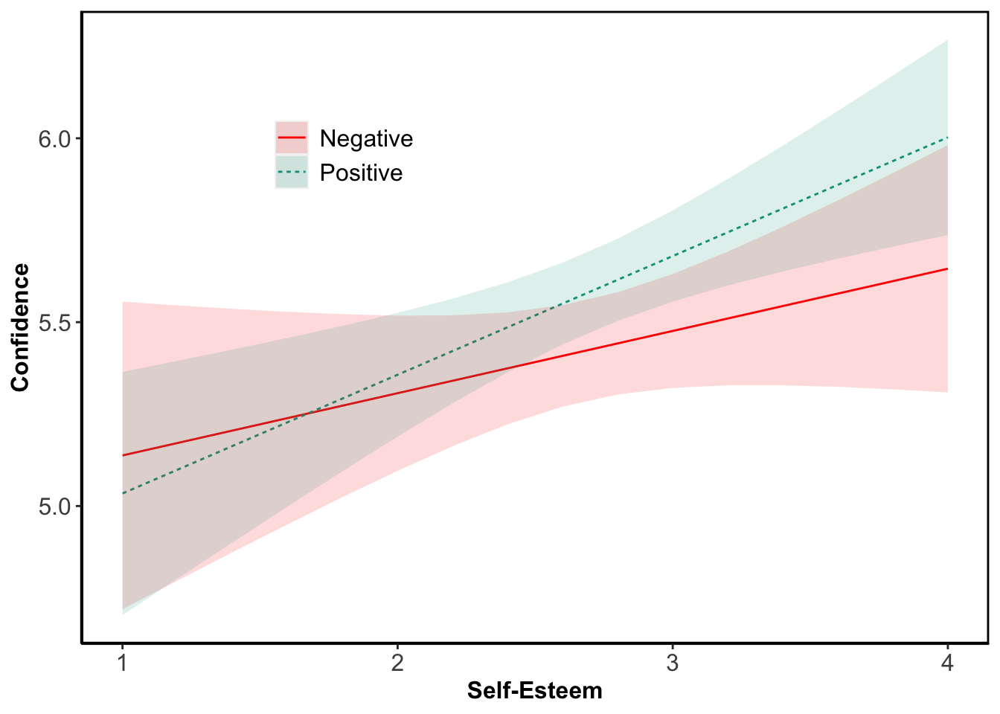
ggpredict(m, c("SE","valence")) %>% plot(add.data=T) + labs(title="Raw Data",x="Self-Esteem",y="Confidence")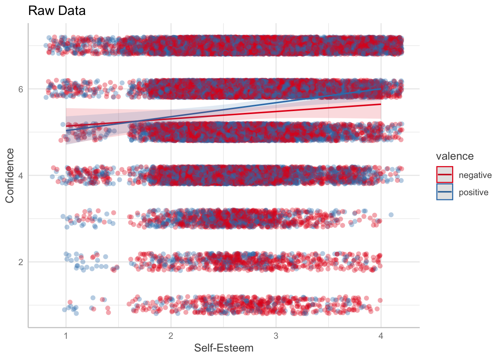
Dialectical Self-Views
m<-lmer( confidence.Z ~ DS.Z*valence + ( valence | subID ) + ( DS.Z | traits), data=longDf, control=lmerControl(optimizer="bobyqa",
optCtrl=list(maxfun=2e5)))
r2beta(m) Effect Rsq upper.CL lower.CL
1 Model 0.014 0.017 0.011
3 valencepositive 0.005 0.007 0.003
2 DS.Z 0.002 0.004 0.001
4 DS.Z:valencepositive 0.001 0.002 0.000tab_model(m, collapse.ci = T, show.stat=T, show.r2 = T, show.se = T, string.pred = c("Fixed Effects"), string.est = "Coef.", string.se = "SE", string.stat = "t", digits = 3, emph.p = F, dv.labels = "Evaluation", df.method = "satterthwaite",show.df=T)| Evaluation | |||||
|---|---|---|---|---|---|
| Fixed Effects | Coef. | SE | t | p | df |
| (Intercept) | -0.051 (-0.149 – 0.046) |
0.049 | -1.036 | 0.301 | 270.186 |
| DS Z | -0.054 (-0.148 – 0.040) |
0.048 | -1.137 | 0.257 | 233.407 |
| valence [positive] | 0.111 (0.049 – 0.173) |
0.032 | 3.511 | <0.001 | 428.533 |
| DS Z * valence [positive] | -0.044 (-0.094 – 0.006) |
0.025 | -1.749 | 0.082 | 239.744 |
| Random Effects | |||||
| σ2 | 0.54 | ||||
| τ00 traits | 0.03 | ||||
| τ00 subID | 0.52 | ||||
| τ11 traits.DS.Z | 0.00 | ||||
| τ11 subID.valencepositive | 0.13 | ||||
| ρ01 traits | 0.33 | ||||
| ρ01 subID | -0.63 | ||||
| ICC | 0.46 | ||||
| N subID | 234 | ||||
| N traits | 296 | ||||
| Observations | 34215 | ||||
| Marginal R2 / Conditional R2 | 0.009 / 0.460 | ||||
Plot
m<-lmer( confidence ~ DS*valence + ( valence | subID ) + ( DS | traits), data=longDf, control=lmerControl(optimizer="bobyqa",
optCtrl=list(maxfun=2e5)))
p <- ggpredict(m, c("DS","valence"))
DS.valence.Conf.Plot <-ggplot(p, aes(x, predicted)) + geom_line(aes(linetype=group, color=group)) + geom_ribbon(aes(ymin=conf.low, ymax=conf.high, fill=group), alpha=0.15) + scale_linetype_discrete(labels = c("Negative", "Positive")) + scale_color_manual(labels = c("Negative", "Positive"), values = wes_palette("Darjeeling1")) + scale_fill_manual(
labels=c("Negative", "Positive"), values = wes_palette("Darjeeling1")) + theme(
legend.position = c(.2, .7),
legend.justification = c("left", "bottom"),
legend.box.just = "left",
legend.margin = margin(6, 6, 6, 6)
) + theme(axis.text=element_text(size=12),
axis.title=element_text(size=12,face="bold")) + theme(legend.text = element_text(size=12)) + theme(panel.border = element_rect(colour = "black", fill = NA, size =1)) + theme(legend.title = element_blank()) + theme(panel.grid.major = element_blank(), panel.grid.minor = element_blank(),
panel.background = element_blank(), axis.line = element_line(colour = "black")) +
xlab("Dialectical Self-Views") + ylab("Confidence")
DS.valence.Conf.Plot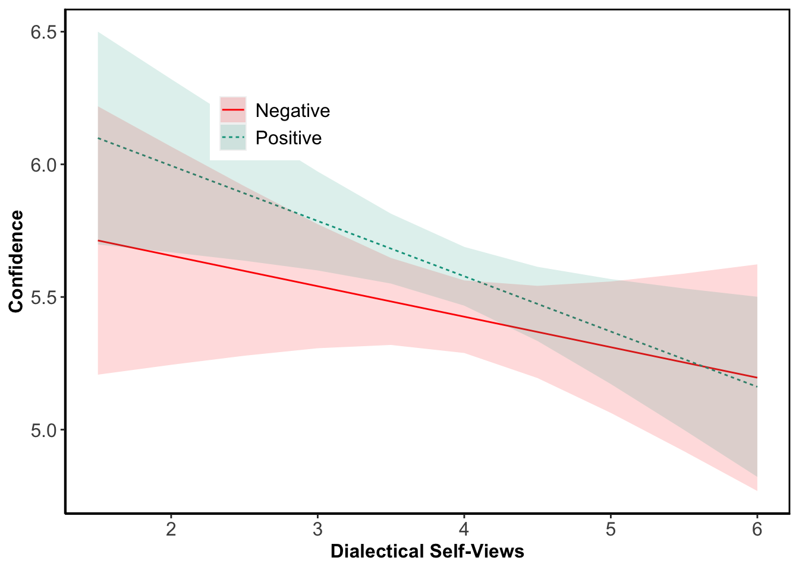
ggpredict(m, c("DS","valence")) %>% plot(add.data=T) + labs(title="Raw Data",x="Dialectical Self-Views",y="Confidence")
Interoceptive Awareness
m<-lmer( confidence.Z ~ MAIA.Z*valence + ( valence | subID ) + ( MAIA.Z | traits), data=longDf, control=lmerControl(optimizer="bobyqa",
optCtrl=list(maxfun=2e5)))
r2beta(m) Effect Rsq upper.CL lower.CL
1 Model 0.033 0.038 0.029
2 MAIA.Z 0.010 0.013 0.008
3 valencepositive 0.005 0.006 0.003
4 MAIA.Z:valencepositive 0.001 0.001 0.000tab_model(m, collapse.ci = T, show.stat=T, show.r2 = T, show.se = T, string.pred = c("Fixed Effects"), string.est = "Coef.", string.se = "SE", string.stat = "t", digits = 3, emph.p = F, dv.labels = "Evaluation", df.method = "satterthwaite",show.df=T)| Evaluation | |||||
|---|---|---|---|---|---|
| Fixed Effects | Coef. | SE | t | p | df |
| (Intercept) | -0.054 (-0.149 – 0.042) |
0.049 | -1.099 | 0.273 | 273.623 |
| MAIA Z | 0.116 (0.024 – 0.208) |
0.047 | 2.488 | 0.014 | 235.114 |
| valence [positive] | 0.109 (0.047 – 0.171) |
0.031 | 3.475 | 0.001 | 431.604 |
| MAIA Z * valence [positive] |
0.041 (-0.008 – 0.090) |
0.025 | 1.630 | 0.104 | 238.787 |
| Random Effects | |||||
| σ2 | 0.54 | ||||
| τ00 traits | 0.03 | ||||
| τ00 subID | 0.51 | ||||
| τ11 traits.MAIA.Z | 0.00 | ||||
| τ11 subID.valencepositive | 0.13 | ||||
| ρ01 traits | -0.47 | ||||
| ρ01 subID | -0.64 | ||||
| ICC | 0.45 | ||||
| N subID | 236 | ||||
| N traits | 296 | ||||
| Observations | 34512 | ||||
| Marginal R2 / Conditional R2 | 0.022 / 0.458 | ||||
Plot
m<-lmer( confidence ~ MAIA*valence + ( valence | subID ) + ( MAIA | traits), data=longDf, control=lmerControl(optimizer="bobyqa",
optCtrl=list(maxfun=2e5)))
p <- ggpredict(m, c("MAIA","valence"))
MAIA.valence.Conf.Plot <-ggplot(p, aes(x, predicted)) + geom_line(aes(linetype=group, color=group)) + geom_ribbon(aes(ymin=conf.low, ymax=conf.high, fill=group), alpha=0.15) + scale_linetype_discrete(labels = c("Negative", "Positive")) + scale_color_manual(labels = c("Negative", "Positive"), values = wes_palette("Darjeeling1")) + scale_fill_manual(
labels=c("Negative", "Positive"), values = wes_palette("Darjeeling1")) + theme(
legend.position = c(.2, .7),
legend.justification = c("left", "bottom"),
legend.box.just = "left",
legend.margin = margin(6, 6, 6, 6)
) + theme(axis.text=element_text(size=12),
axis.title=element_text(size=12,face="bold")) + theme(legend.text = element_text(size=12)) + theme(panel.border = element_rect(colour = "black", fill = NA, size =1)) + theme(legend.title = element_blank()) + theme(panel.grid.major = element_blank(), panel.grid.minor = element_blank(),
panel.background = element_blank(), axis.line = element_line(colour = "black")) +
xlab("Interoceptive Awareness") + ylab("Confidence")
MAIA.valence.Conf.Plot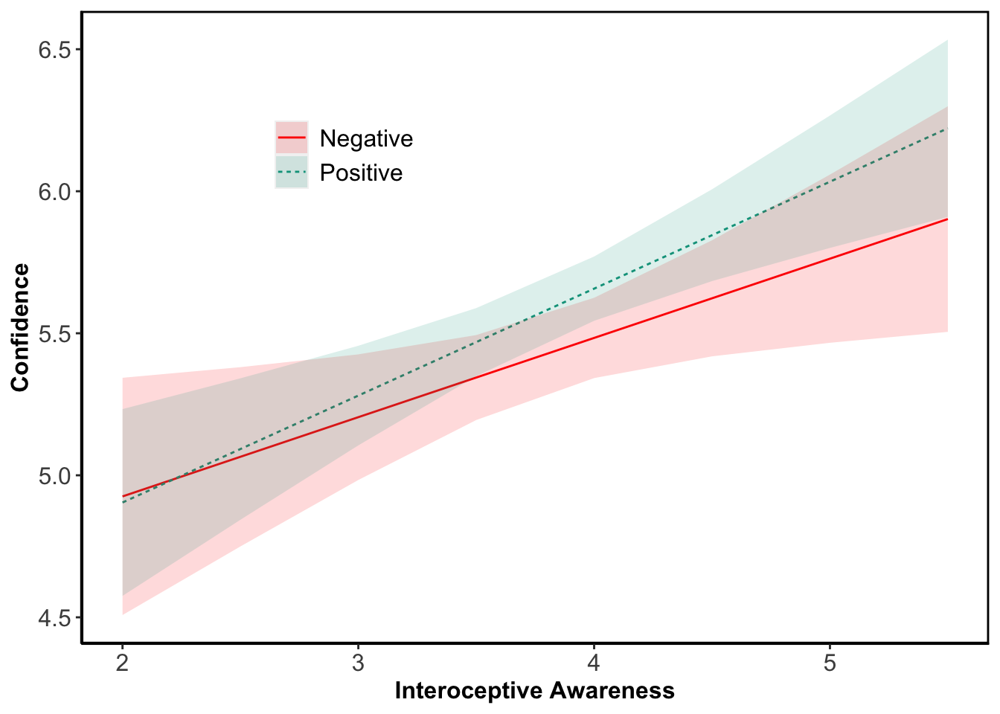
ggpredict(m, c("MAIA","valence")) %>% plot(add.data=T) + labs(title="Raw Data",x="Interoceptive Awareness",y="Confidence")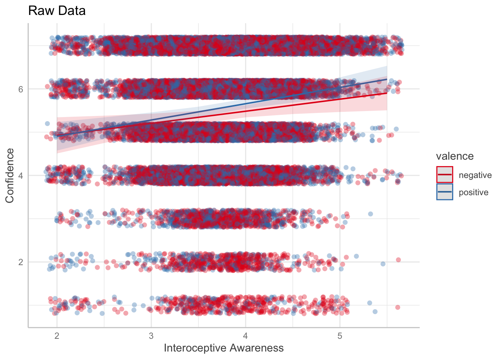
Depressive Symptoms
m<-lmer( confidence.Z ~ CESD.Z*valence + ( valence | subID ) + ( CESD.Z | traits), data=longDf, control=lmerControl(optimizer="bobyqa",
optCtrl=list(maxfun=2e5)))
r2beta(m) Effect Rsq upper.CL lower.CL
1 Model 0.008 0.010 0.006
3 valencepositive 0.005 0.006 0.003
4 CESD.Z:valencepositive 0.002 0.003 0.001
2 CESD.Z 0.000 0.000 0.000tab_model(m, collapse.ci = T, show.stat=T, show.r2 = T, show.se = T, string.pred = c("Fixed Effects"), string.est = "Coef.", string.se = "SE", string.stat = "t", digits = 3, emph.p = F, dv.labels = "Evaluation", df.method = "satterthwaite",show.df=T)| Evaluation | |||||
|---|---|---|---|---|---|
| Fixed Effects | Coef. | SE | t | p | df |
| (Intercept) | -0.060 (-0.157 – 0.038) |
0.049 | -1.208 | 0.228 | 270.233 |
| CESD Z | -0.000 (-0.094 – 0.093) |
0.048 | -0.008 | 0.994 | 232.276 |
| valence [positive] | 0.110 (0.048 – 0.171) |
0.031 | 3.492 | 0.001 | 429.051 |
| CESD Z * valence [positive] |
-0.063 (-0.112 – -0.015) |
0.025 | -2.561 | 0.011 | 231.331 |
| Random Effects | |||||
| σ2 | 0.55 | ||||
| τ00 traits | 0.03 | ||||
| τ00 subID | 0.52 | ||||
| τ11 traits.CESD.Z | 0.00 | ||||
| τ11 subID.valencepositive | 0.13 | ||||
| ρ01 traits | 0.51 | ||||
| ρ01 subID | -0.62 | ||||
| ICC | 0.45 | ||||
| N subID | 234 | ||||
| N traits | 296 | ||||
| Observations | 34217 | ||||
| Marginal R2 / Conditional R2 | 0.005 / 0.456 | ||||
Plot
m<-lmer( confidence ~ CESD*valence + ( valence | subID ) + ( CESD | traits), data=longDf, control=lmerControl(optimizer="bobyqa",
optCtrl=list(maxfun=2e5)))boundary (singular) fit: see help('isSingular')Warning: Model failed to converge with 1 negative eigenvalue: -7.2e+03p <- ggpredict(m, c("CESD","valence"))
CESD.outdeg.Conf.Plot <-ggplot(p, aes(x, predicted)) + geom_line(aes(linetype=group, color=group)) + geom_ribbon(aes(ymin=conf.low, ymax=conf.high, fill=group), alpha=0.15) + scale_linetype_discrete(labels = c("Negative", "Positive")) + scale_color_manual(labels = c("Negative", "Positive"), values = wes_palette("Darjeeling1")) + scale_fill_manual(
labels=c("Negative", "Positive"), values = wes_palette("Darjeeling1")) + theme(
legend.position = c(.2, .7),
legend.justification = c("left", "bottom"),
legend.box.just = "left",
legend.margin = margin(6, 6, 6, 6)
) + theme(axis.text=element_text(size=12),
axis.title=element_text(size=12,face="bold")) + theme(legend.text = element_text(size=12)) + theme(panel.border = element_rect(colour = "black", fill = NA, size =1)) + theme(legend.title = element_blank()) + theme(panel.grid.major = element_blank(), panel.grid.minor = element_blank(),
panel.background = element_blank(), axis.line = element_line(colour = "black")) +
xlab("Depressive Symptoms") + ylab("Confidence")
CESD.outdeg.Conf.Plot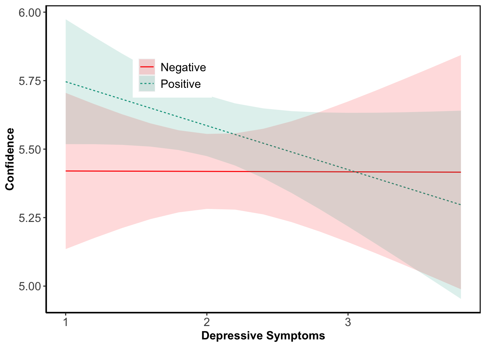
ggpredict(m, c("CESD","valence")) %>% plot(add.data=T) + labs(title="Raw Data",x="Depressive Symptoms",y="Confidence")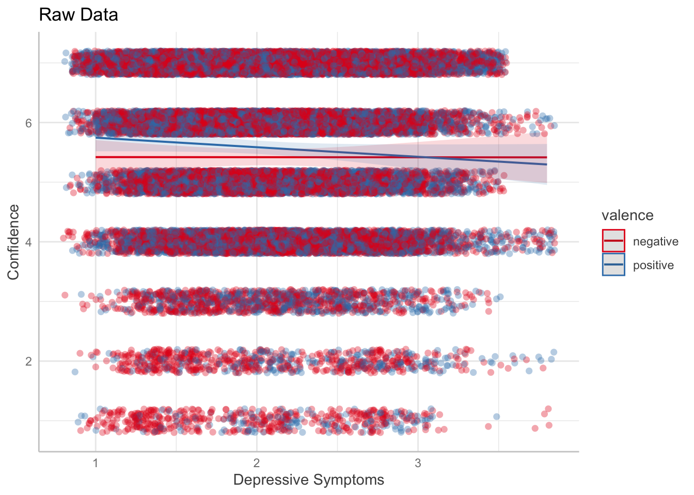